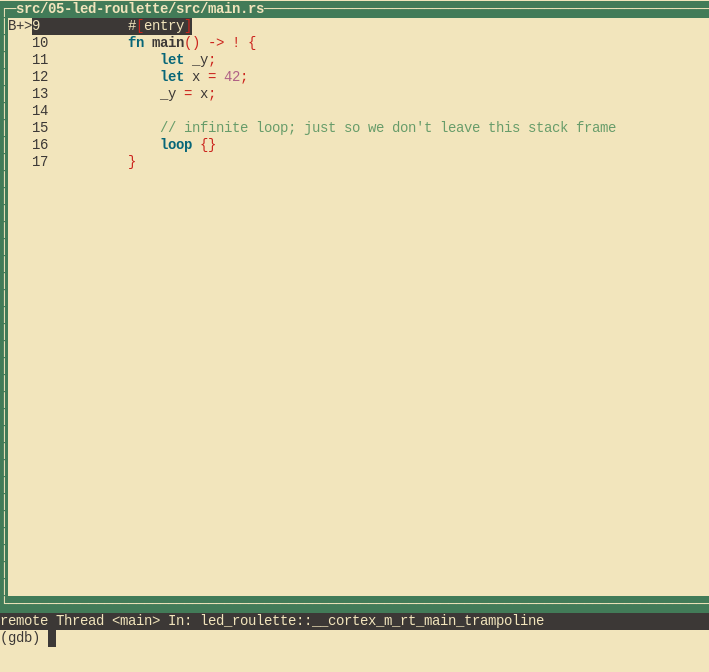

Discovery
Discover the world of microcontrollers through Rust!
This book is an introductory course on microcontroller-based embedded systems that uses Rust as the teaching language rather than the usual C/C++.
Scope
The following topics will be covered (eventually, I hope):
-
How to write, build, flash and debug an "embedded" (Rust) program.
-
Functionality ("peripherals") commonly found in microcontrollers: Digital input and output, Pulse Width Modulation (PWM), Analog to Digital Converters (ADC), common communication protocols like Serial, I2C and SPI, etc.
-
Multitasking concepts: cooperative vs preemptive multitasking, interrupts, schedulers, etc.
-
Control systems concepts: sensors, calibration, digital filters, actuators, open loop control, closed loop control, etc.
Approach
-
Beginner friendly. No previous experience with microcontrollers or embedded systems is required.
-
Hands on. Plenty of exercises to put the theory into practice. You will be doing most of the work here.
-
Tool centered. We'll make plenty use of tooling to ease development. "Real" debugging, with GDB, and logging will be introduced early on. Using LEDs as a debugging mechanism has no place here.
Non-goals
What's out of scope for this book:
-
Teaching Rust. There's plenty of material on that topic already. We'll focus on microcontrollers and embedded systems.
-
Being a comprehensive text about electric circuit theory or electronics. We'll just cover the minimum required to understand how some devices work.
-
Covering details such as linker scripts and the boot process. For example, we'll use existing tools to help get your code onto your board, but not go into detail about how those tools work.
Also I don't intend to port this material to other development boards; this book will make exclusive use of the micro:bit development board.
Reporting problems
The source of this book is in this repository. If you encounter any typo or problem with the code report it on the issue tracker.
Other embedded Rust resources
This Discovery book is just one of several embedded Rust resources provided by the Embedded Working Group. The full selection can be found at The Embedded Rust Bookshelf. This includes the list of Frequently Asked Questions.
Background
What's a microcontroller?
A microcontroller is a system on a chip. Whereas your computer is made up of several discrete components: a processor, RAM, storage, an Ethernet port, etc.; a microcontroller has all those types of components built into a single "chip" or package. This makes it possible to build systems with fewer parts.
What can you do with a microcontroller?
Lots of things! Microcontrollers are the central part of what are known as "embedded systems". Embedded systems are everywhere, but you don't usually notice them. They control the machines that wash your clothes, print your documents, and cook your food. Embedded systems keep the buildings that you live and work in at a comfortable temperature, and control the components that make the vehicles you travel in stop and go.
Most embedded systems operate without user intervention. Even if they expose a user interface like a washing machine does; most of their operation is done on their own.
Embedded systems are often used to control a physical process. To make this possible, they have one or more devices to tell them about the state of the world ("sensors"), and one or more devices which allow them to change things ("actuators"). For example, a building climate control system might have:
- Sensors which measure temperature and humidity in various locations.
- Actuators which control the speed of fans.
- Actuators which cause heat to be added or removed from the building.
When should I use a microcontroller?
Many of the embedded systems listed above could be implemented with a computer running Linux (for example a "Raspberry Pi"). Why use a microcontroller instead? Sounds like it might be harder to develop a program.
Some reasons might include:
Cost. A microcontroller is much cheaper than a general purpose computer. Not only is the microcontroller cheaper; it also requires many fewer external electrical components to operate. This makes Printed Circuit Boards (PCB) smaller and cheaper to design and manufacture.
Power consumption. Most microcontrollers consume a fraction of the power of a full blown processor. For applications which run on batteries, that makes a huge difference.
Responsiveness. To accomplish their purpose, some embedded systems must always react within a limited time interval (e.g. the "anti-lock" braking system of a car). If the system misses this type of deadline, a catastrophic failure might occur. Such a deadline is called a "hard real time" requirement. An embedded system which is bound by such a deadline is referred to as a "hard real-time system". A general purpose computer and OS usually has many software components which share the computer's processing resources. This makes it harder to guarantee execution of a program within tight time constraints.
Reliability. In systems with fewer components (both hardware and software), there is less to go wrong!
When should I not use a microcontroller?
Where heavy computations are involved. To keep their power consumption low, microcontrollers have very limited computational resources available to them. For example, some microcontrollers don't even have hardware support for floating point operations. On those devices, performing a simple addition of single precision numbers can take hundreds of CPU cycles.
Why use Rust and not C?
Hopefully, I don't need to convince you here as you are probably familiar with the language differences between Rust and C. One point I do want to bring up is package management. C lacks an official, widely accepted package management solution whereas Rust has Cargo. This makes development much easier. And, IMO, easy package management encourages code reuse because libraries can be easily integrated into an application which is also a good thing as libraries get more "battle testing".
Why should I not use Rust?
Or why should I prefer C over Rust?
The C ecosystem is way more mature. Off the shelf solutions for several problems already exist. If you need to control a time sensitive process, you can grab one of the existing commercial Real Time Operating Systems (RTOS) out there and solve your problem. There are no commercial, production-grade RTOSes in Rust yet so you would have to either create one yourself or try one of the ones that are in development. You can find a list of those in the Awesome Embedded Rust repository.
Hardware/knowledge requirements
The primary knowledge requirement to read this book is to know some Rust. It's
hard for me to quantify some but at least I can tell you that you don't need
to fully grok generics, but you do need to know how to use closures. You also
need to be familiar with the idioms of the 2018 edition, in particular with
the fact that extern crate is not necessary in the 2018 edition.
Also, to follow this material you'll need the following hardware:
- A micro:bit v2 board, alternatively a micro:bit v1.5 board, the book will refer to the v1.5 as just v1.
(You can purchase this board from several electronics suppliers)

NOTE This is an image of a micro:bit v2, the front of the v1 looks slightly different
- One micro-B USB cable, required to make the micro:bit board work. Make sure that the cable supports data transfer as some cables only support charging devices.

NOTE You may already have a cable like this, as some micro:bit kits ship with such cables. Some USB cables used to charge mobile devices may also work, if they are micro-B and have the capability to transmit data.
FAQ: Wait, why do I need this specific hardware?
It makes my life and yours much easier.
The material is much, much more approachable if we don't have to worry about hardware differences. Trust me on this one.
FAQ: Can I follow this material with a different development board?
Maybe? It depends mainly on two things: your previous experience with microcontrollers and/or
whether a high level crate already exists, like the nrf52-hal, for your development board
somewhere. You can look through the Awesome Embedded Rust HAL list for your microcontroller,
if you intend to use a different one.
With a different development board, this text would lose most if not all its beginner friendliness and "easy to follow"-ness, IMO.
If you have a different development board and you don't consider yourself a total beginner, you are better off starting with the quickstart project template.
Setting up a development environment
Dealing with microcontrollers involves several tools as we'll be dealing with an architecture different from your computer's and we'll have to run and debug programs on a "remote" device.
Documentation
Tooling is not everything though. Without documentation, it is pretty much impossible to work with microcontrollers.
We'll be referring to all these documents throughout this book:
Tools
We'll use all the tools listed below. Where a minimum version is not specified, any recent version should work but we have listed the version we have tested.
-
Rust 1.57.0 or a newer toolchain.
-
gdb-multiarch. Tested version: 10.2. Other versions will most likely work as well though If your distribution/platform does not havegdb-multiarchavailablearm-none-eabi-gdbwill do the trick as well. Furthermore, some normalgdbbinaries are built with multiarch capabilities as well, you can find further information about this in the sub chapters. -
cargo-binutils. Version 0.3.3 or newer.
cargo-embed. Version 0.24.0 or newer.
-
minicomon Linux and macOS. Tested version: 2.7.1. Other versions will most likely work as well though -
PuTTYon Windows.
Next, follow OS-agnostic installation instructions for a few of the tools:
rustc & Cargo
Install rustup by following the instructions at https://rustup.rs.
If you already have rustup installed double check that you are on the stable
channel and your stable toolchain is up-to-date. rustc -V should return a date
newer than the one shown below:
$ rustc -V
rustc 1.53.0 (53cb7b09b 2021-06-17)
cargo-binutils
$ rustup component add llvm-tools
$ cargo install cargo-binutils --vers 0.3.3
$ cargo size --version
cargo-size 0.3.3
cargo-embed
In order to install cargo-embed, first install its prerequisites (note: these instructions are part of the more general probe-rs embedded debugging toolkit). Then install it with cargo:
$ cargo install --locked probe-rs-tools --vers '^0.24'
NOTE This may fail due to frequent changes in probe-rs. If so, go to https://probe.rs and follow the current installation instructions there.
Finally, verify that you have successfully installed cargo-embed by running:
$ cargo embed --version
cargo-embed 0.24.0 (git commit: crates.io)
This repository
Since this book also contains some small Rust code bases used in various chapters you will also have to download its source code. You can do this in one of the following ways:
- Visit the repository, click the green "Code" button and then the "Download Zip" one
- Clone it using git (if you know git you presumably already have it installed) from the same repository as linked in the zip approach
OS specific instructions
Now follow the instructions specific to the OS you are using:
Linux
Here are the installation commands for a few Linux distributions.
Ubuntu 20.04 or newer / Debian 10 or newer
NOTE
gdb-multiarchis the GDB command you'll use to debug your ARM Cortex-M programs
$ sudo apt-get install \
gdb-multiarch \
minicom
Fedora 32 or newer
NOTE
gdbis the GDB command you'll use to debug your ARM Cortex-M programs
$ sudo dnf install \
gdb \
minicom
Arch Linux
NOTE
arm-none-eabi-gdbis the GDB command you'll use to debug your ARM Cortex-M programs
$ sudo pacman -S \
arm-none-eabi-gdb \
minicom
Other distros
NOTE
arm-none-eabi-gdbis the GDB command you'll use to debug your ARM Cortex-M programs
For distros that don't have packages for ARM's pre-built
toolchain,
download the "Linux 64-bit" file and put its bin directory on your path.
Here's one way to do it:
$ mkdir -p ~/local && cd ~/local
$ tar xjf /path/to/downloaded/file/gcc-arm-none-eabi-9-2020-q2-update-x86_64-linux.tar.bz2
Then, use your editor of choice to append to your PATH in the appropriate
shell init file (e.g. ~/.zshrc or ~/.bashrc):
PATH=$PATH:$HOME/local/gcc-arm-none-eabi-9-2020-q2-update/bin
udev rules
These rules let you use USB devices like the micro:bit without root privilege, i.e. sudo.
Create this file in /etc/udev/rules.d with the content shown below.
$ cat /etc/udev/rules.d/69-microbit.rules
# CMSIS-DAP for microbit
ACTION!="add|change", GOTO="microbit_rules_end"
SUBSYSTEM=="usb", ATTR{idVendor}=="0d28", ATTR{idProduct}=="0204", TAG+="uaccess"
LABEL="microbit_rules_end"
Then reload the udev rules with:
$ sudo udevadm control --reload
If you had any board plugged to your computer, unplug them and then plug them in again, or run the following command.
$ sudo udevadm trigger
Now, go to the next section.
Windows
arm-none-eabi-gdb
ARM provides .exe installers for Windows. Grab one from here, and follow the instructions.
Just before the installation process finishes tick/select the "Add path to environment variable"
option. Then verify that the tools are in your %PATH%:
$ arm-none-eabi-gcc -v
(..)
gcc version 5.4.1 20160919 (release) (..)
PuTTY
Download the latest putty.exe from this site and place it somewhere in your %PATH%.
Now, go to the next section.
macOS
All the tools can be installed using Homebrew:
$ # ARM GCC debugger
$ brew install arm-none-eabi-gdb
$ # Minicom
$ brew install minicom
$ # lsusb (list connected USB devices)
$ brew install lsusb
That's all! Go to the next section.
Verify the installation
Let's verify that all the tools were installed correctly.
Linux only
Verify permissions
Connect the micro:bit to your computer using a USB cable.
The micro:bit should now appear as a USB device (file) in /dev/bus/usb. Let's find out how it got
enumerated:
$ lsusb | grep -i "NXP ARM mbed"
Bus 001 Device 065: ID 0d28:0204 NXP ARM mbed
$ # ^^^ ^^^
In my case, the micro:bit got connected to the bus #1 and got enumerated as the device #65. This means the
file /dev/bus/usb/001/065 is the micro:bit. Let's check the file permissions:
$ ls -l /dev/bus/usb/001/065
crw-rw-r--+ 1 nobody nobody 189, 64 Sep 5 14:27 /dev/bus/usb/001/065
The permissions should be crw-rw-r--+, note the + at the end, then see your access rights by running the following command.
$ getfacl /dev/bus/usb/001/065
getfacl: Removing leadin '/' from absolute path names
# file: dev/bus/usb/001/065
# owner: nobody
# group: nobody
user::rw-
user:<YOUR-USER-NAME>:rw-
group::rw-
mask::rw-
other::r-
You should see your username in the list above with the rw- permissions, if not ... then check your udev
rules and try re-loading them with:
$ sudo udevadm control --reload
$ sudo udevadm trigger
All
Verifying cargo-embed
First, connect the micro:bit to your Computer using a USB cable.
At least an orange LED right next to the USB port of the micro:bit should light up. Furthermore, if you have never flashed another program on to your micro:bit, the default program the micro:bit ships with should start blinking the red LEDs on its back, you can ignore them.
Now let's see if probe-rs, and by extensions cargo-embed can see your micro:bit, you can do this by running the following command.
$ probe-rs list
The following debug probes were found:
[0]: BBC micro:bit CMSIS-DAP -- 0d28:0204:990636020005282030f57fa14252d446000000006e052820 (CMSIS-DAP)
Or if you want more information about the micro:bits debug capabilities then you can run:
$ probe-rs info
Probing target via JTAG
Error identifying target using protocol JTAG: The probe does not support the JTAG protocol.
Probing target via SWD
ARM Chip with debug port Default:
Debug Port: DPv1, DP Designer: ARM Ltd
├── 0 MemoryAP
│ └── ROM Table (Class 1), Designer: Nordic VLSI ASA
│ ├── Cortex-M4 SCS (Generic IP component)
│ │ └── CPUID
│ │ ├── IMPLEMENTER: ARM Ltd
│ │ ├── VARIANT: 0
│ │ ├── PARTNO: Cortex-M4
│ │ └── REVISION: 1
│ ├── Cortex-M3 DWT (Generic IP component)
│ ├── Cortex-M3 FBP (Generic IP component)
│ ├── Cortex-M3 ITM (Generic IP component)
│ ├── Cortex-M4 TPIU (Coresight Component)
│ └── Cortex-M4 ETM (Coresight Component)
└── 1 Unknown AP (Designer: Nordic VLSI ASA, Class: Undefined, Type: 0x0, Variant: 0x0, Revision: 0x0)
Debugging RISC-V targets over SWD is not supported. For these targets, JTAG is the only supported protocol. RISC-V specific information cannot be printed.
Debugging Xtensa targets over SWD is not supported. For these targets, JTAG is the only supported protocol. Xtensa specific information cannot be printed.
Next up you will have to modify Embed.toml in the src/03-setup directory of the
book's source code. In the default.general section you will find two commented out
chip variants:
[default.general]
# chip = "nrf52833_xxAA" # uncomment this line for micro:bit V2
# chip = "nrf51822_xxAA" # uncomment this line for micro:bit V1
If you are working with the micro:bit v2 board uncomment the first, for the v1 uncomment the second line.
Next run one of these commands:
$ # make sure you are in src/03-setup of the books source code
$ # If you are working with micro:bit v2
$ rustup target add thumbv7em-none-eabihf
$ cargo embed --target thumbv7em-none-eabihf
$ # If you are working with micro:bit v1
$ rustup target add thumbv6m-none-eabi
$ cargo embed --target thumbv6m-none-eabi
If everything works correctly cargo-embed should first compile the small example program in this directory, then flash it and finally open a nice text based user interface that prints Hello World.
(If it does not, check out general troubleshooting instructions.)
This output is coming from the small Rust program you just flashed on to your micro:bit. Everything is working properly and you can continue with the next chapters!
Getting the most out of your IDE
All code in this book assumes that you use a simple terminal to build your code, run it, and interact with it. It also makes no assumption about your text editor.
However, you may have your favourite IDEs, providing you auto-complete, type annotation, your preferred shortcuts and much more. This section explains how to get the most out of your IDE using the code obtained from this book's repo.
Auto-completion, type annotation, and more
Some IDEs fail to understand the code, because they fail to determine whether a term
is defined in the microbit or microbit-v2 codebase. If you fail to get auto-completion to work,
you may want to try to edit the Cargo.toml files you encounter through this book, and remove
all references to the version of microbit you are not using. That is:
in the Cargo.toml file you must remove the dependency and features you do not use (the part guarded by #[cfg(feature = "vI")] and the guard itself)
IDE configuration
Below, we explain how to configure your IDE to get the most out of this book. If your IDE is not listed below, please improve this book by adding a section, so that the next reader can get the best experience out of it.
How to build with IntelliJ
When editing the IntelliJ build configuration, here are a few non-default values:
- You should edit the command. When this book tells you to run
cargo embed FLAGS, You'll need to replace the default valuerunby the commandembed FLAGS, - You should enable "Emulate terminal in output console". Otherwise, your program will fail to print text to a terminal
- You should ensure that the working directory is
microbit/src/N-name, withN-namebeing the directory of the chapter you are reading. You can not run from thesrcdirectory since it contains no cargo file.
Meet your hardware
Let's get familiar with the hardware we'll be working with.
micro:bit

Here are some of the many components on the board:
- A microcontroller.
- A number of LEDs, most notably the LED matrix on the back
- Two user buttons as well as a reset button (the one next to the USB port).
- One USB port.
- A sensor that is both a magnetometer and an accelerometer
Of these components, the most important is the microcontroller (sometimes shortened to "MCU" for "microcontroller unit"), which is the bigger of the two black squares sitting on the side of the board with the USB port. The MCU is what runs your code. You might sometimes read about "programming a board", when in reality what we are doing is programming the MCU that is installed on the board.
If you happen to be interested in a more in detail description of the board you can checkout the micro:bit website.
Since the MCU is so important, let's take a closer look at the one sitting on our board. Note that only one of the following two sections applies to your board, depending on whether you are working with a micro:bit v2 or v1.
Nordic nRF52833 (the "nRF52", micro:bit v2)
Our MCU has 73 tiny metal pins sitting right underneath it (it's a so called aQFN73 chip). These pins are connected to traces, the little "roads" that act as the wires connecting components together on the board. The MCU can dynamically alter the electrical properties of the pins. This works similar to a light switch altering how electrical current flows through a circuit. By enabling or disabling electrical current to flow through a specific pin, an LED attached to that pin (via the traces) can be turned on and off.
Each manufacturer uses a different part numbering scheme, but many will allow
you to determine information about a component simply by looking at the part
number. Looking at our MCU's part number (N52833 QIAAA0 2024AL, you probably cannot
see it with your bare eye, but it is on the chip), the n at the
front hints to us that this is a part manufactured by Nordic Semiconductor.
Looking up the part number on their website we quickly find the product page.
There we learn that our chip's main marketing point is that it is a
"Bluetooth Low Energy and 2.4 GHz SoC" (SoC being short for "System on a Chip"),
which explains the RF in the product name since RF is short for radio frequency.
If we search through the documentation of the chip linked on the product page
for a bit we find the product specification which contains chapter 10 "Ordering Information"
dedicated to explaining the weird chip naming. Here we learn that:
- The
N52is the MCU's series, indicating that there are othernRF52MCUs - The
833is the part code - The
QIis the package code, short foraQFN73 - The
AAis the variant code, indicating how much RAM and flash memory the MCU has, in our case 512 kilobyte flash and 128 kilobyte RAM - The
A0is the build code, indicating the hardware version (A) as well as the product configuration (0) - The
2024ALis a tracking code, hence it might differ on your chip
The product specification does of course contain a lot more useful information about the chip, for example that it is based on an ARM® Cortex™-M4 32-bit processor.
Arm? Cortex-M4?
If our chip is manufactured by Nordic, then who is Arm? And if our chip is the nRF52833, what is the Cortex-M4?
You might be surprised to hear that while "Arm-based" chips are quite popular, the company behind the "Arm" trademark (Arm Holdings) doesn't actually manufacture chips for purchase. Instead, their primary business model is to just design parts of chips. They will then license those designs to manufacturers, who will in turn implement the designs (perhaps with some of their own tweaks) in the form of physical hardware that can then be sold. Arm's strategy here is different from companies like Intel, which both designs and manufactures their chips.
Arm licenses a bunch of different designs. Their "Cortex-M" family of designs are mainly used as the core in microcontrollers. For example, the Cortex-M4 (the core our chip is based on) is designed for low cost and low power usage. The Cortex-M7 is higher cost, but with more features and performance.
Luckily, you don't need to know too much about different types of processors or Cortex designs for the sake of this book. However, you are hopefully now a bit more knowledgeable about the terminology of your device. While you are working specifically with an nRF52833, you might find yourself reading documentation and using tools for Cortex-M-based chips, as the nRF52833 is based on a Cortex-M design.
Nordic nRF51822 (the "nRF51", micro:bit v1)
Our MCU has 48 tiny metal pins sitting right underneath it (it's a so called QFN48 chip). These pins are connected to traces, the little "roads" that act as the wires connecting components together on the board. The MCU can dynamically alter the electrical properties of the pins. This works similar to a light switch altering how electrical current flows through a circuit. By enabling or disabling electrical current to flow through a specific pin, an LED attached to that pin (via the traces) can be turned on and off.
Each manufacturer uses a different part numbering scheme, but many will allow
you to determine information about a component simply by looking at the part
number. Looking at our MCU's part number (N51822 QFAAH3 1951LN, you probably cannot
see it with your bare eye, but it is on the chip), the n at the
front hints to us that this is a part manufactured by Nordic Semiconductor.
Looking up the part number on their website we quickly find the product page.
There we learn that our chip's main marketing point is that it is a
"Bluetooth Low Energy and 2.4 GHz SoC" (SoC being short for "System on a Chip"),
which explains the RF in the product name since RF is short for radio frequency.
If we search through the documentation of the chip linked on the product page
for a bit we find the product specification which contains chapter 10 "Ordering Information"
dedicated to explaining the weird chip naming. Here we learn that:
- The
N51is the MCU's series, indicating that there are othernRF51MCUs - The
822is the part code - The
QFis the package code, in this case short forQFN48 - The
AAis the variant code, indicating how much RAM and flash memory the MCU has, in our case 256 kilobyte flash and 16 kilobyte RAM - The
H3is the build code, indicating the hardware version (H) as well as the product configuration (3) - The
1951LNis a tracking code, hence it might differ on your chip
The product specification does of course contain a lot more useful information about the chip, for example that it is based on an ARM® Cortex™-M0 32-bit processor.
Arm? Cortex-M0?
If our chip is manufactured by Nordic, then who is Arm? And if our chip is the nRF51822, what is the Cortex-M0?
You might be surprised to hear that while "Arm-based" chips are quite popular, the company behind the "Arm" trademark (Arm Holdings) doesn't actually manufacture chips for purchase. Instead, their primary business model is to just design parts of chips. They will then license those designs to manufacturers, who will in turn implement the designs (perhaps with some of their own tweaks) in the form of physical hardware that can then be sold. Arm's strategy here is different from companies like Intel, which both designs and manufactures their chips.
Arm licenses a bunch of different designs. Their "Cortex-M" family of designs are mainly used as the core in microcontrollers. For example, the Cortex-M0 (the core our chip is based on) is designed for low cost and low power usage. The Cortex-M7 is higher cost, but with more features and performance.
Luckily, you don't need to know too much about different types of processors or Cortex designs for the sake of this book. However, you are hopefully now a bit more knowledgeable about the terminology of your device. While you are working specifically with an nRF51822, you might find yourself reading documentation and using tools for Cortex-M-based chips, as the nRF51822 is based on a Cortex-M design.
Rust Embedded terminology
Before we dive into programming the micro:bit let's have a quick look at the libraries and terminology that will be important for all the future chapters.
Abstraction layers
For any fully supported microcontroller/board with a microcontroller you will usually hear the following terms being used for their levels of abstraction:
Peripheral Access Crate (PAC)
The job of the PAC is to provide a safe (ish) direct interface to the peripherals of the chip, allowing you to configure every last bit however you want (of course also in wrong ways). Usually you only ever have to deal with the PAC if either the layers that are higher up don't fulfill your needs or when you are developing them. The PAC we are (implicitly) going to use is either the one for the nRF52 or for the nRF51.
The Hardware Abstraction Layer (HAL)
The job of the HAL is to build up on top of the chip's PAC and provide an abstraction that is actually usable for someone who does not know about all the special behaviour of this chip. Usually they abstract whole peripherals away into single structs that can for example be used to send data around via the peripheral. We are going to use the nRF52-hal or the nRF51-hal respectively.
The Board Support Crate (historically called Board Support Package, or BSP)
The job of the BSP is to abstract a whole board (such as the micro:bit) away at once. That means it has to provide abstractions to use both the microcontroller as well as the sensors, LEDs etc. that might be present on the board. Quite often (especially with custom-made boards) you will just be working with a HAL for the chip and build the drivers for the sensors either yourself or search for them on crates.io. Luckily for us though, the micro:bit does actually have a BSP so we are going to use that on top of our HAL as well.
Unifying the layers
Next we are going to have a look at a very central piece of software
in the Rust Embedded world: embedded-hal. As its name suggests it
relates to the 2nd level of abstraction we got to know: the HALs.
The idea behind embedded-hal is to provide a set of traits that
describe behaviour which is usually shared across all implementations
of a specific peripheral in all the HALs. For example one would always
expect to have functions that are capable of turning the power on a pin
either on or off. For example to switch an LED on and off on the board.
This allows us to write a driver for, say a temperature sensor, that
can be used on any chip for which an implementation of the embedded-hal traits exists,
simply by writing the driver in such a way that it only relies on the
embedded-hal traits. Drivers that are written in such a way are called
platform agnostic and luckily for us most of the drivers on crates.io
are actually platform agnostic.
Further reading
If you want to learn more about these levels of abstraction, Franz Skarman, a.k.a. TheZoq2, held a talk about this topic during Oxidize 2020, called An Overview of the Embedded Rust Ecosystem.
LED roulette
Alright, let's start by building the following application:
I'm going to give you a high level API to implement this app but don't worry we'll do low level stuff later on. The main goal of this chapter is to get familiar with the flashing and debugging process.
The starter code is in the src directory of the book repository. Inside that directory there are more
directories named after each chapter of this book. Most of those directories are starter Cargo
projects.
Now, jump into the src/05-led-roulette directory. Check the src/main.rs file:
#![deny(unsafe_code)] #![no_main] #![no_std] use cortex_m_rt::entry; use panic_halt as _; use microbit as _; #[entry] fn main() -> ! { let _y; let x = 42; _y = x; // infinite loop; just so we don't leave this stack frame loop {} }
Microcontroller programs are different from standard programs in two aspects: #![no_std] and
#![no_main].
The no_std attribute says that this program won't use the std crate, which assumes an underlying
OS; the program will instead use the core crate, a subset of std that can run on bare metal
systems (i.e., systems without OS abstractions like files and sockets).
The no_main attribute says that this program won't use the standard main interface, which is
tailored for command line applications that receive arguments. Instead of the standard main we'll
use the entry attribute from the cortex-m-rt crate to define a custom entry point. In this
program we have named the entry point "main", but any other name could have been used. The entry
point function must have signature fn() -> !; this type indicates that the function can't return
-- this means that the program never terminates.
If you are a careful observer, you'll also notice there is a .cargo directory in the Cargo project
as well. This directory contains a Cargo configuration file (.cargo/config) that tweaks the
linking process to tailor the memory layout of the program to the requirements of the target device.
This modified linking process is a requirement of the cortex-m-rt crate.
Furthermore, there is also an Embed.toml file
[default.general]
# chip = "nrf52833_xxAA" # uncomment this line for micro:bit V2
# chip = "nrf51822_xxAA" # uncomment this line for micro:bit V1
[default.reset]
halt_afterwards = true
[default.rtt]
enabled = false
[default.gdb]
enabled = true
This file tells cargo-embed that:
- we are working with either a nrf52833 or nrf51822, you will again have to remove the comments from the chip you are using, just like you did in chapter 3.
- we want to halt the chip after we flashed it so our program does not instantly jump to the loop
- we want to disable RTT, RTT being a protocol that allows the chip to send text to a debugger. You have in fact already seen RTT in action, it was the protocol that sent "Hello World" in chapter 3.
- we want to enable GDB, this will be required for the debugging procedure
Alright, let's start by building this program.
Build it
The first step is to build our "binary" crate. Because the microcontroller has a different
architecture than your computer we'll have to cross compile. Cross compiling in Rust land is as simple
as passing an extra --target flag to rustcor Cargo. The complicated part is figuring out the
argument of that flag: the name of the target.
As we already know the microcontroller on the micro:bit v2 has a Cortex-M4F processor in it, the one on v1 a Cortex-M0.
rustc knows how to cross-compile to the Cortex-M architecture and provides several different targets that cover the different processors
families within that architecture:
thumbv6m-none-eabi, for the Cortex-M0 and Cortex-M1 processorsthumbv7m-none-eabi, for the Cortex-M3 processorthumbv7em-none-eabi, for the Cortex-M4 and Cortex-M7 processorsthumbv7em-none-eabihf, for the Cortex-M4F and Cortex-M7F processorsthumbv8m.main-none-eabi, for the Cortex-M33 and Cortex-M35P processorsthumbv8m.main-none-eabihf, for the Cortex-M33F and Cortex-M35PF processors
For the micro:bit v2, we'll use the thumbv7em-none-eabihf target, for v1 the thumbv6m-none-eabi one.
Before cross-compiling you have to download a pre-compiled version of the standard library
(a reduced version of it, actually) for your target. That's done using rustup:
# For micro:bit v2
$ rustup target add thumbv7em-none-eabihf
# For micro:bit v1
$ rustup target add thumbv6m-none-eabi
You only need to do the above step once; rustup will re-install a new standard library
(rust-std component) whenever you update your toolchain. Therefore you can skip this step, if you have already added the necessary target
while verifying your setup.
With the rust-std component in place you can now cross compile the program using Cargo:
# make sure you are in the `src/05-led-roulette` directory
# For micro:bit v2
$ cargo build --features v2 --target thumbv7em-none-eabihf
Compiling semver-parser v0.7.0
Compiling typenum v1.12.0
Compiling cortex-m v0.6.3
(...)
Compiling microbit-v2 v0.10.1
Finished dev [unoptimized + debuginfo] target(s) in 33.67s
# For micro:bit v1
$ cargo build --features v1 --target thumbv6m-none-eabi
Compiling fixed v1.2.0
Compiling syn v1.0.39
Compiling cortex-m v0.6.3
(...)
Compiling microbit v0.10.1
Finished dev [unoptimized + debuginfo] target(s) in 22.73s
NOTE Be sure to compile this crate without optimizations. The provided Cargo.toml file and build command above will ensure optimizations are off.
OK, now we have produced an executable. This executable won't blink any LEDs, it's just a simplified version that we will build upon later in the chapter. As a sanity check, let's verify that the produced executable is actually an ARM binary:
# For micro:bit v2
# equivalent to `readelf -h target/thumbv7em-none-eabihf/debug/led-roulette`
$ cargo readobj --features v2 --target thumbv7em-none-eabihf --bin led-roulette -- --file-headers
Finished dev [unoptimized + debuginfo] target(s) in 0.01s
ELF Header:
Magic: 7f 45 4c 46 01 01 01 00 00 00 00 00 00 00 00 00
Class: ELF32
Data: 2's complement, little endian
Version: 1 (current)
OS/ABI: UNIX - System V
ABI Version: 0
Type: EXEC (Executable file)
Machine: ARM
Version: 0x1
Entry point address: 0x117
Start of program headers: 52 (bytes into file)
Start of section headers: 793112 (bytes into file)
Flags: 0x5000400
Size of this header: 52 (bytes)
Size of program headers: 32 (bytes)
Number of program headers: 4
Size of section headers: 40 (bytes)
Number of section headers: 21
Section header string table index: 19
# For micro:bit v1
# equivalent to `readelf -h target/thumbv6m-none-eabi/debug/led-roulette`
$ cargo readobj --features v1 --target thumbv6m-none-eabi --bin led-roulette -- --file-headers
Finished dev [unoptimized + debuginfo] target(s) in 0.01s
ELF Header:
Magic: 7f 45 4c 46 01 01 01 00 00 00 00 00 00 00 00 00
Class: ELF32
Data: 2's complement, little endian
Version: 1 (current)
OS/ABI: UNIX - System V
ABI Version: 0
Type: EXEC (Executable file)
Machine: ARM
Version: 0x1
Entry point address: 0xC1
Start of program headers: 52 (bytes into file)
Start of section headers: 693196 (bytes into file)
Flags: 0x5000200
Size of this header: 52 (bytes)
Size of program headers: 32 (bytes)
Number of program headers: 4
Size of section headers: 40 (bytes)
Number of section headers: 22
Section header string table index: 20
Next, we'll flash the program into our microcontroller.
Flash it
Flashing is the process of moving our program into the microcontroller's (persistent) memory. Once flashed, the microcontroller will execute the flashed program every time it is powered on.
In this case, our led-roulette program will be the only program in the microcontroller memory.
By this I mean that there's nothing else running on the microcontroller: no OS, no "daemon",
nothing. led-roulette has full control over the device.
Flashing the binary itself is quite simple thanks to cargo embed.
Before executing that command though, let's look into what it actually does. If you look at the side of your micro:bit with the USB connector facing upwards you will notice, that there are actually 2 black squares on there (on the micro:bit v2 there is a third and biggest one, which is a speaker), one is our MCU we already talked about but what purpose does the other one serve? The other chip has 3 main purposes:
- Provide power from the USB connector to our MCU
- Provide a serial to USB bridge for our MCU (we will look into that in a later chapter)
- Being a programmer/debugger (this is the relevant purpose for now)
Basically this chip acts as a bridge between our computer (to which it is connected via USB) and the MCU (to which it is connected via traces and communicates with using the SWD protocol). This bridge enables us to flash new binaries on to the MCU, inspect its state via a debugger and other things.
So lets flash it!
# For micro:bit v2
$ cargo embed --features v2 --target thumbv7em-none-eabihf
(...)
Erasing sectors ✔ [00:00:00] [####################################################################################################################################################] 2.00KiB/ 2.00KiB @ 4.21KiB/s (eta 0s )
Programming pages ✔ [00:00:00] [####################################################################################################################################################] 2.00KiB/ 2.00KiB @ 2.71KiB/s (eta 0s )
Finished flashing in 0.608s
# For micro:bit v1
$ cargo embed --features v1 --target thumbv6m-none-eabi
(...)
Erasing sectors ✔ [00:00:00] [####################################################################################################################################################] 2.00KiB/ 2.00KiB @ 4.14KiB/s (eta 0s )
Programming pages ✔ [00:00:00] [####################################################################################################################################################] 2.00KiB/ 2.00KiB @ 2.69KiB/s (eta 0s )
Finished flashing in 0.614s
You will notice that cargo-embed blocks after outputting the last line, this is intended and you should not close it
since we need it in this state for the next step: debugging it! Furthermore, you will have noticed that the cargo build
and cargo embed are actually passed the same flags, this is because cargo embed actually executes the build and then
flashes the resulting binary on to the chip, hence you can leave out the cargo build step in the future if you
want to flash your code right away.
Debug it
How does this even work?
Before we debug our little program let's take a moment to quickly understand what is actually happening here. In the previous chapter we already discussed the purpose of the second chip on the board as well as how it talks to our computer, but how can we actually use it?
The little option default.gdb.enabled = true in Embed.toml made cargo-embed open a so-called "GDB stub" after flashing,
this is a server that our GDB can connect to and send commands like "set a breakpoint at address X" to. The server can then decide
on its own how to handle this command. In the case of the cargo-embed GDB stub it will forward the
command to the debugging probe on the board via USB which then does the job of actually talking to the
MCU for us.
Let's debug!
Since cargo-embed is blocking our current shell we can simply open a new one and cd back into our project
directory. Once we are there we first have to open the binary in gdb like this:
# For micro:bit v2
$ gdb target/thumbv7em-none-eabihf/debug/led-roulette
# For micro:bit v1
$ gdb target/thumbv6m-none-eabi/debug/led-roulette
NOTE: Depending on which GDB you installed you will have to use a different command to launch it, check out chapter 3 if you forgot which one it was.
NOTE: If you are getting
target/thumbv7em-none-eabihf/debug/led-roulette: No such file or directoryerror, try adding../../to the file path, for example:$ gdb ../../target/thumbv7em-none-eabihf/debug/led-rouletteThis is caused by each example project being in a
workspacethat contains the entire book, and workspaces have a singletargetdirectory. Check out Workspaces chapter in Rust Book for more.
NOTE: If
cargo-embedprints a lot of warnings here don't worry about it. As of now it does not fully implement the GDB protocol and thus might not recognize all the commands your GDB is sending to it, as long as it does not crash, you are fine.
Next we will have to connect to the GDB stub. It runs on localhost:1337 per default so in order to
connect to it run the following:
(gdb) target remote :1337
Remote debugging using :1337
0x00000116 in nrf52833_pac::{{impl}}::fmt (self=0xd472e165, f=0x3c195ff7) at /home/nix/.cargo/registry/src/github.com-1ecc6299db9ec823/nrf52833-pac-0.9.0/src/lib.rs:157
157 #[derive(Copy, Clone, Debug)]
Next what we want to do is get to the main function of our program. We will do this by first setting a breakpoint there and the continuing program execution until we hit the breakpoint:
(gdb) break main
Breakpoint 1 at 0x104: file src/05-led-roulette/src/main.rs, line 9.
Note: automatically using hardware breakpoints for read-only addresses.
(gdb) continue
Continuing.
Breakpoint 1, led_roulette::__cortex_m_rt_main_trampoline () at src/05-led-roulette/src/main.rs:9
9 #[entry]
Breakpoints can be used to stop the normal flow of a program. The continue command will let the
program run freely until it reaches a breakpoint. In this case, until it reaches the main
function because there's a breakpoint there.
Note that GDB output says "Breakpoint 1". Remember that our processor can only use a limited amount of these
breakpoints, so it's a good idea to pay attention to these messages. If you happen to run out of breakpoints,
you can list all the current ones with info break and delete desired ones with delete <breakpoint-num>.
For a nicer debugging experience, we'll be using GDB's Text User Interface (TUI). To enter into that mode, on the GDB shell enter the following command:
(gdb) layout src
NOTE: Apologies Windows users. The GDB shipped with the GNU ARM Embedded Toolchain doesn't support this TUI mode
:-(.

GDB's break command does not only work for function names, it can also break at certain line numbers. If we wanted to break in line 13 we can simply do:
(gdb) break 13
Breakpoint 2 at 0x110: file src/05-led-roulette/src/main.rs, line 13.
(gdb) continue
Continuing.
Breakpoint 2, led_roulette::__cortex_m_rt_main () at src/05-led-roulette/src/main.rs:13
(gdb)
At any point you can leave the TUI mode using the following command:
(gdb) tui disable
We are now "on" the _y = x statement; that statement hasn't been executed yet. This means that x
is initialized but _y is not. Let's inspect those stack/local variables using the print command:
(gdb) print x
$1 = 42
(gdb) print &x
$2 = (*mut i32) 0x20003fe8
(gdb)
As expected, x contains the value 42. The command print &x prints the address of the variable x.
The interesting bit here is that GDB output shows the type of the reference: i32*, a pointer to an i32 value.
If we want to continue the program execution line by line we can do that using the next command
so let's proceed to the loop {} statement:
(gdb) next
16 loop {}
And _y should now be initialized.
(gdb) print _y
$5 = 42
Instead of printing the local variables one by one, you can also use the info locals command:
(gdb) info locals
x = 42
_y = 42
(gdb)
If we use next again on top of the loop {} statement, we'll get stuck because the program will
never pass that statement. Instead, we'll switch to the disassemble view with the layout asm
command and advance one instruction at a time using stepi. You can always switch back into Rust
source code view later by issuing the layout src command again.
NOTE: If you used the
nextorcontinuecommand by mistake and GDB got stuck, you can get unstuck by hittingCtrl+C.
(gdb) layout asm

If you are not using the TUI mode, you can use the disassemble /m command to disassemble the
program around the line you are currently at.
(gdb) disassemble /m
Dump of assembler code for function _ZN12led_roulette18__cortex_m_rt_main17h3e25e3afbec4e196E:
10 fn main() -> ! {
0x0000010a <+0>: sub sp, #8
0x0000010c <+2>: movs r0, #42 ; 0x2a
11 let _y;
12 let x = 42;
0x0000010e <+4>: str r0, [sp, #0]
13 _y = x;
0x00000110 <+6>: str r0, [sp, #4]
14
15 // infinite loop; just so we don't leave this stack frame
16 loop {}
=> 0x00000112 <+8>: b.n 0x114 <_ZN12led_roulette18__cortex_m_rt_main17h3e25e3afbec4e196E+10>
0x00000114 <+10>: b.n 0x114 <_ZN12led_roulette18__cortex_m_rt_main17h3e25e3afbec4e196E+10>
End of assembler dump.
See the fat arrow => on the left side? It shows the instruction the processor will execute next.
If not inside the TUI mode on each stepi command GDB will print the statement and the line number
of the instruction the processor will execute next.
(gdb) stepi
16 loop {}
(gdb) stepi
16 loop {}
One last trick before we move to something more interesting. Enter the following commands into GDB:
(gdb) monitor reset
(gdb) c
Continuing.
Breakpoint 1, led_roulette::__cortex_m_rt_main_trampoline () at src/05-led-roulette/src/main.rs:9
9 #[entry]
(gdb)
We are now back at the beginning of main!
monitor reset will reset the microcontroller and stop it right at the program entry point.
The following continue command will let the program run freely until it reaches the main
function that has a breakpoint on it.
This combo is handy when you, by mistake, skipped over a part of the program that you were interested in inspecting. You can easily roll back the state of your program back to its very beginning.
The fine print: This
resetcommand doesn't clear or touch RAM. That memory will retain its values from the previous run. That shouldn't be a problem though, unless your program behavior depends on the value of uninitialized variables but that's the definition of Undefined Behavior (UB).
We are done with this debug session. You can end it with the quit command.
(gdb) quit
A debugging session is active.
Inferior 1 [Remote target] will be detached.
Quit anyway? (y or n) y
Detaching from program: $PWD/target/thumbv7em-none-eabihf/debug/led-roulette, Remote target
Ending remote debugging.
[Inferior 1 (Remote target) detached]
NOTE: If the default GDB CLI is not to your liking check out gdb-dashboard. It uses Python to turn the default GDB CLI into a dashboard that shows registers, the source view, the assembly view and other things.
If you want to learn more about what GDB can do, check out the section How to use GDB.
What's next? The high level API I promised.
Light it up
embedded-hal
In this chapter we are going to make one of the many LEDs on the back of the micro:bit light up since this is
basically the "Hello World" of embedded programming. In order to get this task done we will use one of the traits
provided by embedded-hal, specifically the OutputPin trait which allows us to turn a pin on or off.
The micro:bit LEDs
On the back of the micro:bit you can see a 5x5 square of LEDs, usually called an LED matrix. This matrix alignment is used so that instead of having to use 25 separate pins to drive every single one of the LEDs, we can just use 10 (5+5) pins in order to control which column and which row of our matrix lights up.
NOTE that the micro:bit v1 team implemented this a little differently. Their schematic page says that it is actually implemented as a 3x9 matrix but a few columns simply remain unused.
Usually in order to determine which specific pins we have to control in order to light a specific LED up we would now have to read the micro:bit v2 schematic or the micro:bit v1 schematic respectively. Luckily for us though we can use the aforementioned micro:bit BSP which abstracts all of this nicely away from us.
Actually lighting it up!
The code required to light up an LED in the matrix is actually quite simple but it requires a bit of setup. First take a look at it and then we can go through it step by step:
#![deny(unsafe_code)] #![no_main] #![no_std] use cortex_m_rt::entry; use panic_halt as _; use microbit::board::Board; use microbit::hal::prelude::*; #[entry] fn main() -> ! { let mut board = Board::take().unwrap(); board.display_pins.col1.set_low().unwrap(); board.display_pins.row1.set_high().unwrap(); loop {} }
The first few lines until the main function just do some basic imports and setup we already looked at before. However, the main function looks pretty different to what we have seen up to now.
The first line is related to how most HALs written in Rust work internally.
As discussed before they are built on top of PAC crates which own (in the Rust sense)
all the peripherals of a chip. let mut board = Board::take().unwrap(); basically takes all
these peripherals from the PAC and binds them to a variable. In this specific case we are
not only working with a HAL but with an entire BSP, so this also takes ownership
of the Rust representation of the other chips on the board.
NOTE: If you are wondering why we have to call
unwrap()here, in theory it is possible fortake()to be called more than once. This would lead to the peripherals being represented by two separate variables and thus lots of possible confusing behaviour because two variables modify the same resource. In order to avoid this, PACs are implemented in a way that it would panic if you tried to take the peripherals twice.
Now we can light the LED connected to row1, col1 up by setting the row1 pin to high (i.e. switching it on).
The reason we can leave col1 set to low is because of how the LED matrix circuit works. Furthermore, embedded-hal is
designed in a way that every operation on hardware can possibly return an error, even just toggling a pin on or off. Since
that is highly unlikely in our case, we can just unwrap() the result.
Testing it
Testing our little program is quite simple. First put it into src/main.rs. Afterwards we simply have to run the
cargo embed command from the last section again, let it flash and just like before. Then open our GDB and connect
to the GDB stub:
$ # Your GDB debug command from the last section
(gdb) target remote :1337
Remote debugging using :1337
cortex_m_rt::Reset () at /home/nix/.cargo/registry/src/github.com-1ecc6299db9ec823/cortex-m-rt-0.6.12/src/lib.rs:489
489 pub unsafe extern "C" fn Reset() -> ! {
(gdb)
If we now let the program run via the GDB continue command, one of the LEDs on the back of the micro:bit should light
up.
It blinks
Delaying
Now we're going to take a brief look into delay abstractions provided by embedded-hal
before combining this with the GPIO abstractions from the previous chapter in order to
finally make an LED blink.
embedded-hal provides us with two abstractions to delay the execution of our program:
DelayUs and DelayMs. Both of them essentially work the exact same way except
that they accept different units for their delay function.
Inside our MCU, several so-called "timers" exist. They can do various things regarding time for us, including simply pausing the execution of our program for a fixed amount of time. A very simple delay-based program that prints something every second might for example look like this:
#![deny(unsafe_code)]
#![no_main]
#![no_std]
use cortex_m_rt::entry;
use rtt_target::{rtt_init_print, rprintln};
use panic_rtt_target as _;
use microbit::board::Board;
use microbit::hal::timer::Timer;
use microbit::hal::prelude::*;
#[entry]
fn main() -> ! {
rtt_init_print!();
let mut board = Board::take().unwrap();
let mut timer = Timer::new(board.TIMER0);
loop {
timer.delay_ms(1000u16);
rprintln!("1000 ms passed");
}
}
Note that we changed our panic implementation from panic_halt to
panic_rtt_target here. This will require you to uncomment the two
RTT lines from Cargo.toml and comment the panic-halt one out,
since Rust only allows one panic implementation at a time.
In order to actually see the prints we have to change Embed.toml like this:
[default.general]
# chip = "nrf52833_xxAA" # uncomment this line for micro:bit V2
# chip = "nrf51822_xxAA" # uncomment this line for micro:bit V1
[default.reset]
halt_afterwards = false
[default.rtt]
enabled = true
[default.gdb]
enabled = false
And now after putting the code into src/main.rs and another quick cargo embed (again with the same flags you used before)
you should see "1000 ms passed" being sent to your console every second from your MCU.
Blinking
Now we've arrived at the point where we can combine our new knowledge about GPIO and delay abstractions in order to actually make an LED on the back of the micro:bit blink. The resulting program is really just a mash-up of the one above and the one that turned an LED on in the last section and looks like this:
#![deny(unsafe_code)]
#![no_main]
#![no_std]
use cortex_m_rt::entry;
use rtt_target::{rtt_init_print, rprintln};
use panic_rtt_target as _;
use microbit::board::Board;
use microbit::hal::timer::Timer;
use microbit::hal::prelude::*;
#[entry]
fn main() -> ! {
rtt_init_print!();
let mut board = Board::take().unwrap();
let mut timer = Timer::new(board.TIMER0);
board.display_pins.col1.set_low().unwrap();
let mut row1 = board.display_pins.row1;
loop {
row1.set_low().unwrap();
rprintln!("Dark!");
timer.delay_ms(1_000_u16);
row1.set_high().unwrap();
rprintln!("Light!");
timer.delay_ms(1_000_u16);
}
}
And after putting the code into src/main.rs and a final cargo embed (with the proper flags)
you should see the LED we light up before blinking as well as a print, every time the LED changes from off to on and vice versa.
The challenge
You are now well armed to face a challenge! Your task will be to implement the application I showed you at the beginning of this chapter.
If you can't exactly see what's happening here it is in a much slower version:
Since working with the LED pins separately is quite annoying (especially if you have to use basically all of them like here) you can use the display API provided by the BSP. It works like this:
#![deny(unsafe_code)] #![no_main] #![no_std] use cortex_m_rt::entry; use rtt_target::rtt_init_print; use panic_rtt_target as _; use microbit::{ board::Board, display::blocking::Display, hal::{prelude::*, Timer}, }; #[entry] fn main() -> ! { rtt_init_print!(); let board = Board::take().unwrap(); let mut timer = Timer::new(board.TIMER0); let mut display = Display::new(board.display_pins); let light_it_all = [ [1, 1, 1, 1, 1], [1, 1, 1, 1, 1], [1, 1, 1, 1, 1], [1, 1, 1, 1, 1], [1, 1, 1, 1, 1], ]; loop { // Show light_it_all for 1000ms display.show(&mut timer, light_it_all, 1000); // clear the display again display.clear(); timer.delay_ms(1000_u32); } }
Equipped with this API your task basically boils down to just having to calculate the proper image matrix and passing it into the BSP.
My solution
What solution did you come up with?
Here's mine, it's probably one of the simplest (but of course not most beautiful) way to generate the required matrix:
#![deny(unsafe_code)] #![no_main] #![no_std] use cortex_m_rt::entry; use rtt_target::rtt_init_print; use panic_rtt_target as _; use microbit::{ board::Board, display::blocking::Display, hal::Timer, }; const PIXELS: [(usize, usize); 16] = [ (0,0), (0,1), (0,2), (0,3), (0,4), (1,4), (2,4), (3,4), (4,4), (4,3), (4,2), (4,1), (4,0), (3,0), (2,0), (1,0) ]; #[entry] fn main() -> ! { rtt_init_print!(); let board = Board::take().unwrap(); let mut timer = Timer::new(board.TIMER0); let mut display = Display::new(board.display_pins); let mut leds = [ [0, 0, 0, 0, 0], [0, 0, 0, 0, 0], [0, 0, 0, 0, 0], [0, 0, 0, 0, 0], [0, 0, 0, 0, 0], ]; let mut last_led = (0,0); loop { for current_led in PIXELS.iter() { leds[last_led.0][last_led.1] = 0; leds[current_led.0][current_led.1] = 1; display.show(&mut timer, leds, 30); last_led = *current_led; } } }
One more thing! Check that your solution also works when compiled in "release" mode:
# For micro:bit v2
$ cargo embed --features v2 --target thumbv7em-none-eabihf --release
(...)
# For micro:bit v1
$ cargo embed --features v1 --target thumbv6m-none-eabi --release
(...)
If you want to debug your "release" mode binary you'll have to use a different GDB command:
# For micro:bit v2
$ gdb target/thumbv7em-none-eabihf/release/led-roulette
# For micro:bit v1
$ gdb target/thumbv6m-none-eabi/release/led-roulette
Binary size is something we should always keep an eye on! How big is your solution? You can check
that using the size command on the release binary:
# For micro:bit v2
$ cargo size --features v2 --target thumbv7em-none-eabihf -- -A
Finished dev [unoptimized + debuginfo] target(s) in 0.02s
led-roulette :
section size addr
.vector_table 256 0x0
.text 26984 0x100
.rodata 2732 0x6a68
.data 0 0x20000000
.bss 1092 0x20000000
.uninit 0 0x20000444
.debug_abbrev 33941 0x0
.debug_info 494113 0x0
.debug_aranges 23528 0x0
.debug_ranges 130824 0x0
.debug_str 498781 0x0
.debug_pubnames 143351 0x0
.debug_pubtypes 124464 0x0
.ARM.attributes 58 0x0
.debug_frame 69128 0x0
.debug_line 290580 0x0
.debug_loc 1449 0x0
.comment 109 0x0
Total 1841390
$ cargo size --features v2 --target thumbv7em-none-eabihf --release -- -A
Finished release [optimized + debuginfo] target(s) in 0.02s
led-roulette :
section size addr
.vector_table 256 0x0
.text 6332 0x100
.rodata 648 0x19bc
.data 0 0x20000000
.bss 1076 0x20000000
.uninit 0 0x20000434
.debug_loc 9036 0x0
.debug_abbrev 2754 0x0
.debug_info 96460 0x0
.debug_aranges 1120 0x0
.debug_ranges 11520 0x0
.debug_str 71325 0x0
.debug_pubnames 32316 0x0
.debug_pubtypes 29294 0x0
.ARM.attributes 58 0x0
.debug_frame 2108 0x0
.debug_line 19303 0x0
.comment 109 0x0
Total 283715
# micro:bit v1
$ cargo size --features v1 --target thumbv6m-none-eabi -- -A
Finished dev [unoptimized + debuginfo] target(s) in 0.02s
led-roulette :
section size addr
.vector_table 168 0x0
.text 28584 0xa8
.rodata 2948 0x7050
.data 0 0x20000000
.bss 1092 0x20000000
.uninit 0 0x20000444
.debug_abbrev 30020 0x0
.debug_info 373392 0x0
.debug_aranges 18344 0x0
.debug_ranges 89656 0x0
.debug_str 375887 0x0
.debug_pubnames 115633 0x0
.debug_pubtypes 86658 0x0
.ARM.attributes 50 0x0
.debug_frame 54144 0x0
.debug_line 237714 0x0
.debug_loc 1499 0x0
.comment 109 0x0
Total 1415898
$ cargo size --features v1 --target thumbv6m-none-eabi --release -- -A
Finished release [optimized + debuginfo] target(s) in 0.02s
led-roulette :
section size addr
.vector_table 168 0x0
.text 4848 0xa8
.rodata 648 0x1398
.data 0 0x20000000
.bss 1076 0x20000000
.uninit 0 0x20000434
.debug_loc 9705 0x0
.debug_abbrev 3235 0x0
.debug_info 61908 0x0
.debug_aranges 1208 0x0
.debug_ranges 5784 0x0
.debug_str 57358 0x0
.debug_pubnames 22959 0x0
.debug_pubtypes 18891 0x0
.ARM.attributes 50 0x0
.debug_frame 2316 0x0
.debug_line 18444 0x0
.comment 19 0x0
Total 208617
NOTE The Cargo project is already configured to build the release binary using LTO.
Know how to read this output? The text section contains the program instructions. On the other hand,
the data and bss sections contain variables statically allocated in RAM (static variables).
If you remember back in the specification of the microcontroller on your micro:bit, you should
notice that its flash memory is actually far too small to contain this binary, so how is this possible?
As we can see from the size statistics most of the binary is actually made up of debugging related
sections, those are however not flashed to the microcontroller at any time, after all they aren't
relevant for the execution.
Serial communication

This is what we'll be using. I hope your computer has one!
Nah, don't worry. This connector, the DE-9, went out of fashion on PCs quite some time ago; it got replaced by the Universal Serial Bus (USB). We won't be dealing with the DE-9 connector itself but with the communication protocol that this cable is/was usually used for.
So what's this serial communication? It's an asynchronous communication protocol where two devices exchange data serially, as in one bit at a time, using two data lines (plus a common ground). The protocol is asynchronous in the sense that neither of the shared lines carries a clock signal. Instead, both parties must agree on how fast data will be sent along the wire before the communication occurs. This protocol allows duplex communication as data can be sent from A to B and from B to A simultaneously.
We'll be using this protocol to exchange data between the microcontroller and your computer. Now you might be asking yourself why exactly we aren't using RTT for this like we did before. RTT is a protocol that is meant to be used solely for debugging. You will most definitely not be able to find a device that actually uses RTT to communicate with some other device in production. However, serial communication is used quite often. For example some GPS receivers send the positioning information they receive via serial communication.
The next practical question you probably want to ask is: How fast can we send data through this protocol?
This protocol works with frames. Each frame has one start bit, 5 to 9 bits of payload (data) and 1 to 2 stop bits. The speed of the protocol is known as baud rate and it's quoted in bits per second (bps). Common baud rates are: 9600, 19200, 38400, 57600 and 115200 bps.
To actually answer the question: With a common configuration of 1 start bit, 8 bits of data, 1 stop bit and a baud rate of 115200 bps one can, in theory, send 11,520 frames per second. Since each one frame carries a byte of data that results in a data rate of 11.52 KB/s. In practice, the data rate will probably be lower because of processing times on the slower side of the communication (the microcontroller).
Today's computers don't support the serial communication protocol. So you can't directly connect your computer to the microcontroller. Luckily for us though, the debug probe on the micro:bit has a so-called USB-to-serial converter. This means that the converter will sit between the two and expose a serial interface to the microcontroller and a USB interface to your computer. The microcontroller will see your computer as another serial device and your computer will see the microcontroller as a virtual serial device.
Now, let's get familiar with the serial module and the serial communication tools that your OS offers. Pick a route:
*nix tooling
Connecting the micro:bit board
If you connect the micro:bit board to your computer you
should see a new TTY device appear in /dev.
$ # Linux
$ dmesg | grep -i tty
[63712.446286] cdc_acm 1-1.7:1.1: ttyACM0: USB ACM device
This is the USB <-> Serial device. On Linux, it's named tty* (usually
ttyACM* or ttyUSB*).
On Mac OS ls /dev/cu.usbmodem* will show the serial device.
But what exactly is ttyACM0? It's a file of course!
Everything is a file in *nix:
$ ls -l /dev/ttyACM0
crw-rw----. 1 root plugdev 166, 0 Jan 21 11:56 /dev/ttyACM0
You can send out data by simply writing to this file:
$ echo 'Hello, world!' > /dev/ttyACM0
You should see the orange LED on the micro:bit, right next to the USB port, blink for a moment, whenever you enter this command.
minicom
We'll use the program minicom to interact with the serial device using the keyboard.
We must configure minicom before we use it. There are quite a few ways to do that but we'll use a
.minirc.dfl file in the home directory. Create a file in ~/.minirc.dfl with the following
contents:
$ cat ~/.minirc.dfl
pu baudrate 115200
pu bits 8
pu parity N
pu stopbits 1
pu rtscts No
pu xonxoff No
NOTE Make sure this file ends in a newline! Otherwise,
minicomwill fail to read it.
That file should be straightforward to read (except for the last two lines), but nonetheless let's go over it line by line:
pu baudrate 115200. Sets baud rate to 115200 bps.pu bits 8. 8 bits per frame.pu parity N. No parity check.pu stopbits 1. 1 stop bit.pu rtscts No. No hardware control flow.pu xonxoff No. No software control flow.
Once that's in place, we can launch minicom.
$ # NOTE you may need to use a different device here
$ minicom -D /dev/ttyACM0 -b 115200
This tells minicom to open the serial device at /dev/ttyACM0 and set its
baud rate to 115200. A text-based user interface (TUI) will pop out.

You can now send data using the keyboard! Go ahead and type something. Note that the text UI will not echo back what you type. If you pay attention to the yellow LED on top of the micro:bit though, you will notice that it blinks whenever you type something.
minicom commands
minicom exposes commands via keyboard shortcuts. On Linux, the shortcuts start with Ctrl+A. On
Mac, the shortcuts start with the Meta key. Some useful commands below:
Ctrl+A+Z. Minicom Command SummaryCtrl+A+C. Clear the screenCtrl+A+X. Exit and resetCtrl+A+Q. Quit with no reset
NOTE Mac users: In the above commands, replace
Ctrl+AwithMeta.
Windows tooling
Start by unplugging your micro:bit.
Before plugging the micro:bit, run the following command on the terminal:
$ mode
It will print a list of devices that are connected to your computer. The ones that start with COM in
their names are serial devices. This is the kind of device we'll be working with. Take note of all
the COM ports mode outputs before plugging the serial module.
Now, plug in the micro:bit and run the mode command again. If you see a new
COM port appear on the list, then that's the COM port assigned to the
serial functionality on the micro:bit.
Now launch putty. A GUI will pop out.

On the starter screen, which should have the "Session" category open, pick "Serial" as the
"Connection type". On the "Serial line" field enter the COM device you got on the previous step,
for example COM3.
Next, pick the "Connection/Serial" category from the menu on the left. On this new view, make sure that the serial port is configured as follows:
- "Speed (baud)": 115200
- "Data bits": 8
- "Stop bits": 1
- "Parity": None
- "Flow control": None
Finally, click the Open button. A console will show up now:

If you type on this console, the yellow LED on top of the micro:bit will blink. Each keystroke should make the LED blink once. Note that the console won't echo back what you type so the screen will remain blank.
UART
The microcontroller has a peripheral called UART, which stands for Universal Asynchronous Receiver/Transmitter. This peripheral can be configured to work with several communication protocols like the serial communication protocol.
Throughout this chapter, we'll use serial communication to exchange information between the microcontroller and your computer.
NOTE that on the micro:bit v2 we will use the so called UARTE peripheral which behaves just like a regular UART, except that the HAL has to talk to it differently. However, this will of course not be our concern.
Setup
As always from now on you will have to modify the Embed.toml to match your micro:bit version:
[default.general]
chip = "nrf52833_xxAA" # uncomment this line for micro:bit V2
# chip = "nrf51822_xxAA" # uncomment this line for micro:bit V1
[default.reset]
halt_afterwards = false
[default.rtt]
enabled = true
[default.gdb]
enabled = false
Send a single byte
Our first task will be to send a single byte from the microcontroller to the computer over the serial connection.
In order to do that we will use the following snippet (this one is already in 07-uart/src/main.rs):
#![no_main] #![no_std] use cortex_m_rt::entry; use panic_rtt_target as _; use rtt_target::rtt_init_print; #[cfg(feature = "v1")] use microbit::{ hal::prelude::*, hal::uart, hal::uart::{Baudrate, Parity}, }; #[cfg(feature = "v2")] use microbit::{ hal::prelude::*, hal::uarte, hal::uarte::{Baudrate, Parity}, }; #[cfg(feature = "v1")] use embedded_io::Write; #[cfg(feature = "v2")] use embedded_hal_nb::serial::Write; #[cfg(feature = "v2")] mod serial_setup; #[cfg(feature = "v2")] use serial_setup::UartePort; #[entry] fn main() -> ! { rtt_init_print!(); let board = microbit::Board::take().unwrap(); #[cfg(feature = "v1")] let mut serial = { // Set up UART for microbit v1 let serial = uart::Uart::new( board.UART0, board.uart.into(), Parity::EXCLUDED, Baudrate::BAUD115200, ); serial }; #[cfg(feature = "v2")] let mut serial = { // Set up UARTE for microbit v2 using UartePort wrapper let serial = uarte::Uarte::new( board.UARTE0, board.uart.into(), Parity::EXCLUDED, Baudrate::BAUD115200, ); UartePort::new(serial) }; // Write a byte and flush #[cfg(feature = "v1")] serial.write(&[b'X']).unwrap(); // Adjusted for UART on v1, no need for nb::block! #[cfg(feature = "v2")] { nb::block!(serial.write(b'X')).unwrap(); nb::block!(serial.flush()).unwrap(); } loop {} }
The most prevalent new thing here is obviously the cfg directives to conditionally include/exclude
parts of the code. This is mostly just because we want to work with a regular UART for the micro:bit v1
and with the UARTE for micro:bit v2.
You will also have noticed that this is the first time we are including some code that is not from a library,
namely the serial_setup module. Its only purpose is to provide a nice wrapper around the UARTE
so we can use it the exact same way as the UART via the embedded_hal::serial traits. If you want, you can
check out what exactly the module does, but it is not required to understand this chapter in general.
Apart from those differences, the initialization procedures for the UART and the UARTE are quite similar so we'll discuss the initialization of just UARTE. The UARTE is initialized with this piece of code:
uarte::Uarte::new(
board.UARTE0,
board.uart.into(),
Parity::EXCLUDED,
Baudrate::BAUD115200,
);
This function takes ownership of the UARTE peripheral representation in Rust (board.UARTE0) and the TX/RX pins
on the board (board.uart.into()) so nobody else can mess with either the UARTE peripheral or our pins while
we are using them. After that we pass two configuration options to the constructor: the baudrate (that one should be
familiar) as well as an option called "parity". Parity is a way to allow serial communication lines to check whether
the data they received was corrupted during transmission. We don't want to use that here so we simply exclude it.
Then we wrap it up in the UartePort type so we can use it the same way as the micro:bit v1's serial.
After the initialization, we send our X via the newly created uart instance. The block! macro here is the nb::block!
macro. nb is a (quoting from its description) "Minimal and reusable non-blocking I/O layer". It allows us to write
code that can conduct hardware operations in the background while we go and do other work (non-blocking). However,
in this and many other cases we have no interest in doing some other work so we just call block! which will wait until
the I/O operation is done and has either succeeded or failed and then continue execution normally.
Last but not least, we flush() the serial port. This is because an implementor of the embedded-hal::serial traits may
decide to buffer output until it has received a certain number of bytes to send (this is the case with the UARTE implementation).
Calling flush() forces it to write the bytes it currently has right now instead of waiting for more.
Testing it
Before flashing this you should make sure to start your minicom/PuTTY as the data we receive via our serial communication is not backed up or anything, we have to view it live. Once your serial monitor is up you can flash the program just like in chapter 5:
# For micro:bit v2
$ cargo embed --features v2 --target thumbv7em-none-eabihf
(...)
# For micro:bit v1
$ cargo embed --features v1 --target thumbv6m-none-eabi
And after the flashing is finished, you should see the character X show up on your minicom/PuTTY terminal, congrats!
Send a string
The next task will be to send a whole string from the microcontroller to your computer.
I want you to send the string "The quick brown fox jumps over the lazy dog." from the microcontroller to
your computer.
It's your turn to write the program.
Naive approach and write!
Naive approach
You probably came up with a program similar to the following:
#![no_main]
#![no_std]
use cortex_m_rt::entry;
use rtt_target::rtt_init_print;
use panic_rtt_target as _;
#[cfg(feature = "v1")]
use microbit::{
hal::prelude::*,
hal::uart,
hal::uart::{Baudrate, Parity},
};
#[cfg(feature = "v2")]
use microbit::{
hal::prelude::*,
hal::uarte,
hal::uarte::{Baudrate, Parity},
};
#[cfg(feature = "v2")]
mod serial_setup;
#[cfg(feature = "v2")]
use serial_setup::UartePort;
#[entry]
fn main() -> ! {
rtt_init_print!();
let board = microbit::Board::take().unwrap();
#[cfg(feature = "v1")]
let mut serial = {
uart::Uart::new(
board.UART0,
board.uart.into(),
Parity::EXCLUDED,
Baudrate::BAUD115200,
)
};
#[cfg(feature = "v2")]
let mut serial = {
let serial = uarte::Uarte::new(
board.UARTE0,
board.uart.into(),
Parity::EXCLUDED,
Baudrate::BAUD115200,
);
UartePort::new(serial)
};
for byte in b"The quick brown fox jumps over the lazy dog.\r\n".iter() {
nb::block!(serial.write(*byte)).unwrap();
}
nb::block!(serial.flush()).unwrap();
loop {}
}
While this is a perfectly valid implementation, at some point
you might want to have all the nice perks of print! such
as argument formatting and so on. If you are wondering how to do that, read on.
write! and core::fmt::Write
The core::fmt::Write trait allows us to use any struct that implements
it in basically the same way as we use print! in the std world.
In this case, the Uart struct from the nrf HAL does implement core::fmt::Write
so we can refactor our previous program into this:
#![no_main]
#![no_std]
use cortex_m_rt::entry;
use rtt_target::rtt_init_print;
use panic_rtt_target as _;
use core::fmt::Write;
#[cfg(feature = "v1")]
use microbit::{
hal::prelude::*,
hal::uart,
hal::uart::{Baudrate, Parity},
};
#[cfg(feature = "v2")]
use microbit::{
hal::prelude::*,
hal::uarte,
hal::uarte::{Baudrate, Parity},
};
#[cfg(feature = "v2")]
mod serial_setup;
#[cfg(feature = "v2")]
use serial_setup::UartePort;
#[entry]
fn main() -> ! {
rtt_init_print!();
let board = microbit::Board::take().unwrap();
#[cfg(feature = "v1")]
let mut serial = {
uart::Uart::new(
board.UART0,
board.uart.into(),
Parity::EXCLUDED,
Baudrate::BAUD115200,
)
};
#[cfg(feature = "v2")]
let mut serial = {
let serial = uarte::Uarte::new(
board.UARTE0,
board.uart.into(),
Parity::EXCLUDED,
Baudrate::BAUD115200,
);
UartePort::new(serial)
};
write!(serial, "The quick brown fox jumps over the lazy dog.\r\n").unwrap();
nb::block!(serial.flush()).unwrap();
loop {}
}
If you were to flash this program onto your micro:bit, you'll see that it is functionally equivalent to the iterator-based program you came up with.
Receive a single byte
So far we can send data from the microcontroller to your computer. It's time to try the opposite: receiving
data from your computer. Luckily embedded-hal has again got us covered with this one:
#![no_main] #![no_std] use cortex_m_rt::entry; use rtt_target::{rtt_init_print, rprintln}; use panic_rtt_target as _; #[cfg(feature = "v1")] use microbit::{ hal::prelude::*, hal::uart, hal::uart::{Baudrate, Parity}, }; #[cfg(feature = "v2")] use microbit::{ hal::prelude::*, hal::uarte, hal::uarte::{Baudrate, Parity}, }; #[cfg(feature = "v2")] mod serial_setup; #[cfg(feature = "v2")] use serial_setup::UartePort; #[entry] fn main() -> ! { rtt_init_print!(); let board = microbit::Board::take().unwrap(); #[cfg(feature = "v1")] let mut serial = { uart::Uart::new( board.UART0, board.uart.into(), Parity::EXCLUDED, Baudrate::BAUD115200, ) }; #[cfg(feature = "v2")] let mut serial = { let serial = uarte::Uarte::new( board.UARTE0, board.uart.into(), Parity::EXCLUDED, Baudrate::BAUD115200, ); UartePort::new(serial) }; loop { let byte = nb::block!(serial.read()).unwrap(); rprintln!("{}", byte); } }
The only part that changed, compared to our send byte program, is the loop
at the end of main(). Here we use the read() function, provided by embedded-hal,
in order to wait until a byte is available and read it. Then we print that byte
into our RTT debugging console to see whether stuff is actually arriving.
Note that if you flash this program and start typing characters inside minicom to
send them to your microcontroller you'll only be able to see numbers inside your
RTT console since we are not converting the u8 we received into an actual char.
Since the conversion from u8 to char is quite simple, I'll leave this task to
you if you really do want to see the characters inside the RTT console.
Echo server
Let's merge transmission and reception into a single program and write an echo server. An echo server sends back to the client the same text it receives. For this application, the microcontroller will be the server and you and your computer will be the client.
This should be straightforward to implement. (hint: do it byte by byte)
Reverse a string
Alright, next let's make the server more interesting by having it respond to the client with the reverse of the text that they sent. The server will respond to the client every time they press the ENTER key. Each server response will be in a new line.
This time you'll need a buffer; you can use heapless::Vec. Here's the starter code:
#![no_main] #![no_std] use cortex_m_rt::entry; use core::fmt::Write; use heapless::Vec; use rtt_target::rtt_init_print; use panic_rtt_target as _; #[cfg(feature = "v1")] use microbit::{ hal::prelude::*, hal::uart, hal::uart::{Baudrate, Parity}, }; #[cfg(feature = "v2")] use microbit::{ hal::prelude::*, hal::uarte, hal::uarte::{Baudrate, Parity}, }; #[cfg(feature = "v2")] mod serial_setup; #[cfg(feature = "v2")] use serial_setup::UartePort; #[entry] fn main() -> ! { rtt_init_print!(); let board = microbit::Board::take().unwrap(); #[cfg(feature = "v1")] let mut serial = { uart::Uart::new( board.UART0, board.uart.into(), Parity::EXCLUDED, Baudrate::BAUD115200, ) }; #[cfg(feature = "v2")] let mut serial = { let serial = uarte::Uarte::new( board.UARTE0, board.uart.into(), Parity::EXCLUDED, Baudrate::BAUD115200, ); UartePort::new(serial) }; // A buffer with 32 bytes of capacity let mut buffer: Vec<u8, 32> = Vec::new(); loop { buffer.clear(); // TODO Receive a user request. Each user request ends with ENTER // NOTE `buffer.push` returns a `Result`. Handle the error by responding // with an error message. // TODO Send back the reversed string } }
My solution
#![no_main] #![no_std] use cortex_m_rt::entry; use core::fmt::Write; use heapless::Vec; use rtt_target::rtt_init_print; use panic_rtt_target as _; #[cfg(feature = "v1")] use microbit::{ hal::prelude::*, hal::uart, hal::uart::{Baudrate, Parity}, }; #[cfg(feature = "v2")] use microbit::{ hal::prelude::*, hal::uarte, hal::uarte::{Baudrate, Parity}, }; #[cfg(feature = "v2")] mod serial_setup; #[cfg(feature = "v2")] use serial_setup::UartePort; #[entry] fn main() -> ! { rtt_init_print!(); let board = microbit::Board::take().unwrap(); #[cfg(feature = "v1")] let mut serial = { uart::Uart::new( board.UART0, board.uart.into(), Parity::EXCLUDED, Baudrate::BAUD115200, ) }; #[cfg(feature = "v2")] let mut serial = { let serial = uarte::Uarte::new( board.UARTE0, board.uart.into(), Parity::EXCLUDED, Baudrate::BAUD115200, ); UartePort::new(serial) }; // A buffer with 32 bytes of capacity let mut buffer: Vec<u8, 32> = Vec::new(); loop { buffer.clear(); loop { // We assume that the receiving cannot fail let byte = nb::block!(serial.read()).unwrap(); if buffer.push(byte).is_err() { write!(serial, "error: buffer full\r\n").unwrap(); break; } if byte == 13 { for byte in buffer.iter().rev().chain(&[b'\n', b'\r']) { nb::block!(serial.write(*byte)).unwrap(); } break; } } nb::block!(serial.flush()).unwrap() } }
I2C
We just saw the serial communication protocol. It's a widely used protocol because it's very simple and this simplicity makes it easy to implement on top of other protocols like Bluetooth and USB.
However, its simplicity is also a downside. More elaborated data exchanges, like reading a digital sensor, would require the sensor vendor to come up with another protocol on top of it.
(Un)Luckily for us, there are plenty of other communication protocols in the embedded space. Some of them are widely used in digital sensors.
The micro:bit board we are using has two motion sensors in it: an accelerometer and a magnetometer. Both of these sensors are packaged into a single component and can be accessed via an I2C bus.
I2C stands for Inter-Integrated Circuit and is a synchronous serial communication protocol. It uses two lines to exchange data: a data line (SDA) and a clock line (SCL). Because a clock line is used to synchronize the communication, this is a synchronous protocol.

This protocol uses a controller target model where the controller is the device that starts and drives the communication with a target device. Several devices, both controllers and targets, can be connected to the same bus at the same time. A controller device can communicate with a specific target device by first broadcasting its address to the bus. This address can be 7 bits or 10 bits long. Once a controller has started a communication with a target, no other device can make use of the bus until the controller stops the communication.
The clock line determines how fast data can be exchanged and it usually operates at a frequency of 100 kHz (standard mode) or 400 kHz (fast mode).
General protocol
The I2C protocol is more elaborate than the serial communication protocol because it has to support communication between several devices. Let's see how it works using examples:
Controller -> Target
If the Controller wants to send data to the Target:
- Controller: Broadcast START
- C: Broadcast target address (7 bits) + the R/W (8th) bit set to WRITE
- Target: Responds ACK (ACKnowledgement)
- C: Send one byte
- T: Responds ACK
- Repeat steps 4 and 5 zero or more times
- C: Broadcast STOP OR (broadcast RESTART and go back to (2))
NOTE The target address could have been 10 bits instead of 7 bits long. Nothing else would have changed.
Controller <- Target
If the controller wants to read data from the target:
- C: Broadcast START
- C: Broadcast target address (7 bits) + the R/W (8th) bit set to READ
- T: Responds with ACK
- T: Send byte
- C: Responds with ACK
- Repeat steps 4 and 5 zero or more times
- C: Broadcast STOP OR (broadcast RESTART and go back to (2))
NOTE The target address could have been 10 bits instead of 7 bits long. Nothing else would have changed.
LSM303AGR
Both of the motion sensors on the micro:bit, the magnetometer and the accelerometer, are packaged in a single component: the LSM303AGR integrated circuit. These two sensors can be accessed via an I2C bus. Each sensor behaves like an I2C target and has a different address.
Each sensor has its own memory where it stores the results of sensing its environment. Our interaction with these sensors will mainly involve reading their memory.
The memory of these sensors is modeled as byte addressable registers. These sensors can be configured too; that's done by writing to their registers. So, in a sense, these sensors are very similar to the peripherals inside the microcontroller. The difference is that their registers are not mapped into the microcontrollers' memory. Instead, their registers have to be accessed via the I2C bus.
The main source of information about the LSM303AGR is its Data Sheet. Read through it to see how one can read the sensors' registers. That part is in:
Section 6.1.1 I2C Operation - Page 38 - LSM303AGR Data Sheet
The other part of the documentation relevant to this book is the description of the registers. That part is in:
Section 8 Register description - Page 46 - LSM303AGR Data Sheet
Read a single register
Let's put all that theory into practice!
First things first we need to know the target addresses of both the accelerometer and the magnetometer inside the chip, these can be found in the LSM303AGR's datasheet on page 39 and are:
- 0011001 for the accelerometer
- 0011110 for the magnetometer
NOTE Remember that these are only the 7 leading bits of the address, the 8th bit is going to be the bit that determines whether we are performing a read or write.
Next up we'll need a register to read from. Lots of I2C chips out there will
provide some sort of device identification register for their controllers to read.
This is done since considering the thousands (or even millions) of I2C chips
out there it is highly likely that at some point two chips with the same address
will end up being built (after all the address is "only" 7 bit wide). With
this device ID register a driver could then make sure that it is indeed talking
to a LSM303AGR and not some other chip that just happens to have the same address.
As you can read in the LSM303AGR's datasheet (specifically on page 46 and 61)
it does provide two registers called WHO_AM_I_A at address 0x0f and WHO_AM_I_M
at address 0x4f which contain some bit patterns that are unique to the device
(The A is as in accelerometer and the M is as in magnetometer).
The only thing missing now is the software part, i.e. which API of the microbit/the HAL
crates we should use for this. However, if you read through the datasheet of the nRF chip
you are using you will soon find out that they don't actually have an I2C peripheral.
Luckily for us though, they have I2C-compatible ones called TWI (Two Wire Interface)
and TWIM (depending on which chip you use, just like UART and UARTE).
Now if we put the documentation of the twi(m) module from the microbit crate
together with all the other information we have gathered so far we'll end up with this
piece of code to read out and print the two device IDs:
#![deny(unsafe_code)] #![no_main] #![no_std] use cortex_m_rt::entry; use rtt_target::{rtt_init_print, rprintln}; use panic_rtt_target as _; use microbit::hal::prelude::*; #[cfg(feature = "v1")] use microbit::{ hal::twi, pac::twi0::frequency::FREQUENCY_A, }; #[cfg(feature = "v2")] use microbit::{ hal::twim, pac::twim0::frequency::FREQUENCY_A, }; const ACCELEROMETER_ADDR: u8 = 0b0011001; const MAGNETOMETER_ADDR: u8 = 0b0011110; const ACCELEROMETER_ID_REG: u8 = 0x0f; const MAGNETOMETER_ID_REG: u8 = 0x4f; #[entry] fn main() -> ! { rtt_init_print!(); let board = microbit::Board::take().unwrap(); #[cfg(feature = "v1")] let mut i2c = { twi::Twi::new(board.TWI0, board.i2c.into(), FREQUENCY_A::K100) }; #[cfg(feature = "v2")] let mut i2c = { twim::Twim::new(board.TWIM0, board.i2c_internal.into(), FREQUENCY_A::K100) }; let mut acc = [0]; let mut mag = [0]; // First write the address + register onto the bus, then read the chip's responses i2c.write_read(ACCELEROMETER_ADDR, &[ACCELEROMETER_ID_REG], &mut acc).unwrap(); i2c.write_read(MAGNETOMETER_ADDR, &[MAGNETOMETER_ID_REG], &mut mag).unwrap(); rprintln!("The accelerometer chip's id is: {:#b}", acc[0]); rprintln!("The magnetometer chip's id is: {:#b}", mag[0]); loop {} }
Apart from the initialization, this piece of code should be straight forward if you
understood the I2C protocol as described before. The initialization here works similarly
to the one from the UART chapter.
We pass the peripheral as well as the pins that are used to communicate with the chip to the constructor; and then the frequency we wish the bus to operate on, in this case 100 kHz (K100).
Testing it
As always you have to modify Embed.toml to fit your MCU and can then use:
# For micro:bit v2
$ cargo embed --features v2 --target thumbv7em-none-eabihf
# For micro:bit v1
$ cargo embed --features v1 --target thumbv6m-none-eabi
in order to test our little example program.
Using a driver
As we already discussed in chapter 5 embedded-hal provides abstractions
which can be used to write platform independent code that can interact with
hardware. In fact all the methods we have used to interact with hardware
in chapter 7 and up until now in chapter 8 were from traits, defined by embedded-hal.
Now we'll make actual use of the traits embedded-hal provides for the first time.
It would be pointless to implement a driver for our LSM303AGR for every platform
embedded Rust supports (and new ones that might eventually pop up). To avoid this a driver
can be written that consumes generic types that implement embedded-hal traits in order to provide
a platform agnostic version of a driver. Luckily for us this has already been done in the
lsm303agr crate. Hence reading the actual accelerometer and magnetometer values will now
be basically a plug and play experience (plus reading a bit of documentation). In fact the crates.io
page already provides us with everything we need to know in order to read accelerometer data but using a Raspberry Pi. We'll
just have to adapt it to our chip:
use linux_embedded_hal::I2cdev; use lsm303agr::{AccelOutputDataRate, Lsm303agr}; fn main() { let dev = I2cdev::new("/dev/i2c-1").unwrap(); let mut sensor = Lsm303agr::new_with_i2c(dev); sensor.init().unwrap(); sensor.set_accel_odr(AccelOutputDataRate::Hz50).unwrap(); loop { if sensor.accel_status().unwrap().xyz_new_data { let data = sensor.accel_data().unwrap(); println!("Acceleration: x {} y {} z {}", data.x, data.y, data.z); } } }
Because we already know how to create an instance of an object that implements
the embedded_hal::blocking::i2c traits from the previous page, this is quite trivial:
#![deny(unsafe_code)] #![no_main] #![no_std] use cortex_m_rt::entry; use rtt_target::{rtt_init_print, rprintln}; use panic_rtt_target as _; #[cfg(feature = "v1")] use microbit::{ hal::twi, pac::twi0::frequency::FREQUENCY_A, }; #[cfg(feature = "v2")] use microbit::{ hal::twim, pac::twim0::frequency::FREQUENCY_A, }; use lsm303agr::{ AccelOutputDataRate, Lsm303agr, }; #[entry] fn main() -> ! { rtt_init_print!(); let board = microbit::Board::take().unwrap(); #[cfg(feature = "v1")] let i2c = { twi::Twi::new(board.TWI0, board.i2c.into(), FREQUENCY_A::K100) }; #[cfg(feature = "v2")] let i2c = { twim::Twim::new(board.TWIM0, board.i2c_internal.into(), FREQUENCY_A::K100) }; // Code from documentation let mut sensor = Lsm303agr::new_with_i2c(i2c); sensor.init().unwrap(); sensor.set_accel_odr(AccelOutputDataRate::Hz50).unwrap(); loop { if sensor.accel_status().unwrap().xyz_new_data { let data = sensor.accel_data().unwrap(); // RTT instead of normal print rprintln!("Acceleration: x {} y {} z {}", data.x, data.y, data.z); } } }
Just like the last snippet you should just be able to try this out like this:
# For micro:bit v2
$ cargo embed --features v2 --target thumbv7em-none-eabihf
# For micro:bit v1
$ cargo embed --features v1 --target thumbv6m-none-eabi
Furthermore if you (physically) move around your micro:bit a little you should see the acceleration numbers that are being printed change.
The challenge
The challenge for this chapter is, to build a small application that communicates with the outside world via the serial interface introduced in the last chapter. It should be able to receive the commands "magnetometer" as well as "accelerometer" and then print the corresponding sensor data in response. This time no template code will be provided since all you need is already provided in the UART and this chapter. However, here are a few clues:
- You might be interested in
core::str::from_utf8to convert the bytes in the buffer to a&str, since we need to compare with"magnetometer"and"accelerometer". - You will (obviously) have to read the documentation of the magnetometer API, however it's more or less equivalent to the accelerometer one
My solution
#![no_main] #![no_std] use core::str; use cortex_m_rt::entry; use rtt_target::rtt_init_print; use panic_rtt_target as _; #[cfg(feature = "v1")] use microbit::{ hal::twi, pac::twi0::frequency::FREQUENCY_A, hal::uart, hal::uart::{Baudrate, Parity}, }; #[cfg(feature = "v2")] use microbit::{ hal::twim, pac::twim0::frequency::FREQUENCY_A, hal::uarte, hal::uarte::{Baudrate, Parity}, }; use microbit::hal::prelude::*; use lsm303agr::{AccelOutputDataRate, MagOutputDataRate, Lsm303agr}; use heapless::Vec; use nb::block; use core::fmt::Write; #[cfg(feature = "v2")] mod serial_setup; #[cfg(feature = "v2")] use serial_setup::UartePort; #[entry] fn main() -> ! { rtt_init_print!(); let board = microbit::Board::take().unwrap(); #[cfg(feature = "v1")] let mut serial = { uart::Uart::new( board.UART0, board.uart.into(), Parity::EXCLUDED, Baudrate::BAUD115200, ) }; #[cfg(feature = "v2")] let mut serial = { let serial = uarte::Uarte::new( board.UARTE0, board.uart.into(), Parity::EXCLUDED, Baudrate::BAUD115200, ); UartePort::new(serial) }; #[cfg(feature = "v1")] let i2c = { twi::Twi::new(board.TWI0, board.i2c.into(), FREQUENCY_A::K100) }; #[cfg(feature = "v2")] let i2c = { twim::Twim::new(board.TWIM0, board.i2c_internal.into(), FREQUENCY_A::K100) }; let mut sensor = Lsm303agr::new_with_i2c(i2c); sensor.init().unwrap(); sensor.set_accel_odr(AccelOutputDataRate::Hz50).unwrap(); sensor.set_mag_odr(MagOutputDataRate::Hz50).unwrap(); let mut sensor = sensor.into_mag_continuous().ok().unwrap(); loop { let mut buffer: Vec<u8, 32> = Vec::new(); loop { let byte = block!(serial.read()).unwrap(); if byte == 13 { break; } if buffer.push(byte).is_err() { write!(serial, "error: buffer full\r\n").unwrap(); break; } } if str::from_utf8(&buffer).unwrap().trim() == "accelerometer" { while !sensor.accel_status().unwrap().xyz_new_data { } let data = sensor.accel_data().unwrap(); write!(serial, "Accelerometer: x {} y {} z {}\r\n", data.x, data.y, data.z).unwrap(); } else if str::from_utf8(&buffer).unwrap().trim() == "magnetometer" { while !sensor.mag_status().unwrap().xyz_new_data { } let data = sensor.mag_data().unwrap(); write!(serial, "Magnetometer: x {} y {} z {}\r\n", data.x, data.y, data.z).unwrap(); } else { write!(serial, "error: command not detected\r\n").unwrap(); } } }
LED compass
In this section, we'll implement a compass using the LEDs on the micro:bit. Like proper compasses, our LED compass must point north somehow. It will do that by turning on one of its outer LEDs; the LED turned on should point towards north.
Magnetic fields have both a magnitude, measured in Gauss or Teslas, and a direction. The magnetometer on the micro:bit measures both the magnitude and the direction of an external magnetic field but it reports back the decomposition of said field along its axes.
The magnetometer has three axes associated to it. The X and Y axes basically span the plane that is the floor. The Z axis is pointing "out" of the floor, so upwards.
You should already be able to write a program that continuously prints the magnetometer data on the RTT console from the I2C chapter. After you wrote that program, locate where north is at your current location. Then line up your micro:bit with that direction and observe how the sensor's measurements look.
Now rotate the board 90 degrees while keeping it parallel to the ground. What X, Y and Z values do you see this time? Then rotate it 90 degrees again. What values do you see?
Calibration
One very important thing to do before using a sensor and trying to develop an application using it is verifying that it's output is actually correct. If this does not happen to be the case we need to calibrate the sensor (alternatively it could also be broken but that's rather unlikely in this case).
In my case on two different micro:bit's the magnetometer, without calibration, was quite a bit off of what it is supposed to measure. Hence for the purposes of this chapter we will just assume that the sensor has to be calibrated.
The calibration involves quite a bit of math (matrices) so we won't cover it here but this Design Note describes the procedure if you are interested.
Luckily for us though the group that built the original software for the micro:bit already implemented a calibration mechanism in C++ over here.
You can find a translation of it to Rust in src/calibration.rs. The usage
is demonstrated in the default src/main.rs file. The way the calibration
works is illustrated in this video:
You have to basically tilt the micro:bit until all the LEDs on the LED matrix light up.
If you do not want to play the game every time you restart your application during development
feel free to modify the src/main.rs template to just use the same static calibration
once you got the first one.
Now where we got the sensor calibration out of the way let's look into actually building this application!
Take 1
What's the simplest way in which we can implement the LED compass, even if it's not perfect?
For starters, we'd only care about the X and Y components of the magnetic field because when you look at a compass you always hold it in horizontal position and thus the compass is in the XY plane.

If we only looked at the signs of the X and Y components we could determine to which quadrant the magnetic field belongs to. Now the question of course is which direction (north, north-east, etc.) do the 4 quadrants represent. In order to figure this out we can just rotate the micro:bit and observe how the quadrant changes whenever we point in another direction.
After experimenting a bit we can find out that if we point the micro:bit in e.g. north-east direction, both the X and the Y component are always positive. Based on this information you should be able to figure out which direction the other quadrants represent.
Once you figured out the relation between quadrant and direction you should be able to complete the template from below.
#![deny(unsafe_code)] #![no_main] #![no_std] use cortex_m_rt::entry; use panic_rtt_target as _; use rtt_target::{rprintln, rtt_init_print}; mod calibration; use crate::calibration::calc_calibration; use crate::calibration::calibrated_measurement; mod led; use led::Direction; use microbit::{display::blocking::Display, hal::Timer}; #[cfg(feature = "v1")] use microbit::{hal::twi, pac::twi0::frequency::FREQUENCY_A}; #[cfg(feature = "v2")] use microbit::{hal::twim, pac::twim0::frequency::FREQUENCY_A}; use lsm303agr::{AccelOutputDataRate, Lsm303agr, MagOutputDataRate}; #[entry] fn main() -> ! { rtt_init_print!(); let board = microbit::Board::take().unwrap(); #[cfg(feature = "v1")] let i2c = { twi::Twi::new(board.TWI0, board.i2c.into(), FREQUENCY_A::K100) }; #[cfg(feature = "v2")] let i2c = { twim::Twim::new(board.TWIM0, board.i2c_internal.into(), FREQUENCY_A::K100) }; let mut timer = Timer::new(board.TIMER0); let mut display = Display::new(board.display_pins); let mut sensor = Lsm303agr::new_with_i2c(i2c); sensor.init().unwrap(); sensor.set_mag_odr(MagOutputDataRate::Hz10).unwrap(); sensor.set_accel_odr(AccelOutputDataRate::Hz10).unwrap(); let mut sensor = sensor.into_mag_continuous().ok().unwrap(); let calibration = calc_calibration(&mut sensor, &mut display, &mut timer); rprintln!("Calibration: {:?}", calibration); rprintln!("Calibration done, entering busy loop"); loop { while !sensor.mag_status().unwrap().xyz_new_data {} let mut data = sensor.mag_data().unwrap(); data = calibrated_measurement(data, &calibration); let dir = match (data.x > 0, data.y > 0) { // Quadrant ??? (true, true) => Direction::NorthEast, // Quadrant ??? (false, true) => panic!("TODO"), // Quadrant ??? (false, false) => panic!("TODO"), // Quadrant ??? (true, false) => panic!("TODO"), }; // use the led module to turn the direction into an LED arrow // and the led display functions from chapter 5 to display the // arrow } }
Solution 1
#![deny(unsafe_code)] #![no_main] #![no_std] use cortex_m_rt::entry; use panic_rtt_target as _; use rtt_target::{rprintln, rtt_init_print}; mod calibration; use crate::calibration::calc_calibration; use crate::calibration::calibrated_measurement; mod led; use crate::led::Direction; use crate::led::direction_to_led; use microbit::{display::blocking::Display, hal::Timer}; #[cfg(feature = "v1")] use microbit::{hal::twi, pac::twi0::frequency::FREQUENCY_A}; #[cfg(feature = "v2")] use microbit::{hal::twim, pac::twim0::frequency::FREQUENCY_A}; use lsm303agr::{AccelOutputDataRate, Lsm303agr, MagOutputDataRate}; #[entry] fn main() -> ! { rtt_init_print!(); let board = microbit::Board::take().unwrap(); #[cfg(feature = "v1")] let i2c = { twi::Twi::new(board.TWI0, board.i2c.into(), FREQUENCY_A::K100) }; #[cfg(feature = "v2")] let i2c = { twim::Twim::new(board.TWIM0, board.i2c_internal.into(), FREQUENCY_A::K100) }; let mut timer = Timer::new(board.TIMER0); let mut display = Display::new(board.display_pins); let mut sensor = Lsm303agr::new_with_i2c(i2c); sensor.init().unwrap(); sensor.set_mag_odr(MagOutputDataRate::Hz10).unwrap(); sensor.set_accel_odr(AccelOutputDataRate::Hz10).unwrap(); let mut sensor = sensor.into_mag_continuous().ok().unwrap(); let calibration = calc_calibration(&mut sensor, &mut display, &mut timer); rprintln!("Calibration: {:?}", calibration); rprintln!("Calibration done, entering busy loop"); loop { while !sensor.mag_status().unwrap().xyz_new_data {} let mut data = sensor.mag_data().unwrap(); data = calibrated_measurement(data, &calibration); let dir = match (data.x > 0, data.y > 0) { // Quadrant I (true, true) => Direction::NorthEast, // Quadrant II (false, true) => Direction::NorthWest, // Quadrant III (false, false) => Direction::SouthWest, // Quadrant IV (true, false) => Direction::SouthEast, }; // use the led module to turn the direction into an LED arrow // and the led display functions from chapter 5 to display the // arrow display.show(&mut timer, direction_to_led(dir), 100); } }
Take 2
This time, we'll use math to get the precise angle that the magnetic field forms with the X and Y axes of the magnetometer.
We'll use the atan2 function. This function returns an angle in the -PI to PI range. The
graphic below shows how this angle is measured:

Although not explicitly shown in this graph the X axis points to the right and the Y axis points up.
Here's the starter code. theta, in radians, has already been computed. You need to pick which LED
to turn on based on the value of theta.
#![deny(unsafe_code)]
#![no_main]
#![no_std]
use cortex_m_rt::entry;
use panic_rtt_target as _;
use rtt_target::{rprintln, rtt_init_print};
mod calibration;
use crate::calibration::calc_calibration;
use crate::calibration::calibrated_measurement;
mod led;
use crate::led::Direction;
use crate::led::direction_to_led;
// You'll find this useful ;-)
use core::f32::consts::PI;
use libm::atan2f;
use microbit::{display::blocking::Display, hal::Timer};
#[cfg(feature = "v1")]
use microbit::{hal::twi, pac::twi0::frequency::FREQUENCY_A};
#[cfg(feature = "v2")]
use microbit::{hal::twim, pac::twim0::frequency::FREQUENCY_A};
use lsm303agr::{AccelOutputDataRate, Lsm303agr, MagOutputDataRate};
#[entry]
fn main() -> ! {
rtt_init_print!();
let board = microbit::Board::take().unwrap();
#[cfg(feature = "v1")]
let i2c = { twi::Twi::new(board.TWI0, board.i2c.into(), FREQUENCY_A::K100) };
#[cfg(feature = "v2")]
let i2c = { twim::Twim::new(board.TWIM0, board.i2c_internal.into(), FREQUENCY_A::K100) };
let mut timer = Timer::new(board.TIMER0);
let mut display = Display::new(board.display_pins);
let mut sensor = Lsm303agr::new_with_i2c(i2c);
sensor.init().unwrap();
sensor.set_mag_odr(MagOutputDataRate::Hz10).unwrap();
sensor.set_accel_odr(AccelOutputDataRate::Hz10).unwrap();
let mut sensor = sensor.into_mag_continuous().ok().unwrap();
let calibration = calc_calibration(&mut sensor, &mut display, &mut timer);
rprintln!("Calibration: {:?}", calibration);
rprintln!("Calibration done, entering busy loop");
loop {
while !sensor.mag_status().unwrap().xyz_new_data {}
let mut data = sensor.mag_data().unwrap();
data = calibrated_measurement(data, &calibration);
// use libm's atan2f since this isn't in core yet
let theta = atan2f(data.y as f32, data.x as f32);
// Figure out the direction based on theta
let dir = Direction::NorthEast;
display.show(&mut timer, direction_to_led(dir), 100);
}
}
Suggestions/tips:
- A whole circle rotation equals 360 degrees.
PIradians is equivalent to 180 degrees.- If
thetawas zero, which direction are you pointing at? - If
thetawas, instead, very close to zero, which direction are you pointing at? - If
thetakept increasing, at what value would you change the direction
Solution 2
#![deny(unsafe_code)] #![no_main] #![no_std] use cortex_m_rt::entry; use panic_rtt_target as _; use rtt_target::{rprintln, rtt_init_print}; mod calibration; use crate::calibration::calc_calibration; use crate::calibration::calibrated_measurement; mod led; use crate::led::Direction; use crate::led::direction_to_led; // You'll find this useful ;-) use core::f32::consts::PI; use libm::atan2f; use microbit::{display::blocking::Display, hal::Timer}; #[cfg(feature = "v1")] use microbit::{hal::twi, pac::twi0::frequency::FREQUENCY_A}; #[cfg(feature = "v2")] use microbit::{hal::twim, pac::twim0::frequency::FREQUENCY_A}; use lsm303agr::{AccelOutputDataRate, Lsm303agr, MagOutputDataRate}; #[entry] fn main() -> ! { rtt_init_print!(); let board = microbit::Board::take().unwrap(); #[cfg(feature = "v1")] let i2c = { twi::Twi::new(board.TWI0, board.i2c.into(), FREQUENCY_A::K100) }; #[cfg(feature = "v2")] let i2c = { twim::Twim::new(board.TWIM0, board.i2c_internal.into(), FREQUENCY_A::K100) }; let mut timer = Timer::new(board.TIMER0); let mut display = Display::new(board.display_pins); let mut sensor = Lsm303agr::new_with_i2c(i2c); sensor.init().unwrap(); sensor.set_mag_odr(MagOutputDataRate::Hz10).unwrap(); sensor.set_accel_odr(AccelOutputDataRate::Hz10).unwrap(); let mut sensor = sensor.into_mag_continuous().ok().unwrap(); let calibration = calc_calibration(&mut sensor, &mut display, &mut timer); rprintln!("Calibration: {:?}", calibration); rprintln!("Calibration done, entering busy loop"); loop { while !sensor.mag_status().unwrap().xyz_new_data {} let mut data = sensor.mag_data().unwrap(); data = calibrated_measurement(data, &calibration); // use libm's atan2f since this isn't in core yet let theta = atan2f(data.y as f32, data.x as f32); // Figure out the direction based on theta let dir = if theta < -7. * PI / 8. { Direction::West } else if theta < -5. * PI / 8. { Direction::SouthWest } else if theta < -3. * PI / 8. { Direction::South } else if theta < -PI / 8. { Direction::SouthEast } else if theta < PI / 8. { Direction::East } else if theta < 3. * PI / 8. { Direction::NorthEast } else if theta < 5. * PI / 8. { Direction::North } else if theta < 7. * PI / 8. { Direction::NorthWest } else { Direction::West }; display.show(&mut timer, direction_to_led(dir), 100); } }
Magnitude
We have been working with the direction of the magnetic field but what is its real magnitude?
According to the documentation about the mag_data() function the x y z values we are
getting are in nanotesla. That means the only thing we have to compute in order to get the
magnitude of the magnetic field in nanotesla is the magnitude of the 3D vector that our x y z
values describe. As you might remember from school this is simply:
#![allow(unused)] fn main() { // core doesn't have this function yet so we use libm, just like with // atan2f from before. use libm::sqrtf; let magnitude = sqrtf(x * x + y * y + z * z); }
Putting all this together in a program:
#![deny(unsafe_code)] #![no_main] #![no_std] use cortex_m_rt::entry; use panic_rtt_target as _; use rtt_target::{rprintln, rtt_init_print}; mod calibration; use crate::calibration::calc_calibration; use crate::calibration::calibrated_measurement; use libm::sqrtf; use microbit::{display::blocking::Display, hal::Timer}; #[cfg(feature = "v1")] use microbit::{hal::twi, pac::twi0::frequency::FREQUENCY_A}; #[cfg(feature = "v2")] use microbit::{hal::twim, pac::twim0::frequency::FREQUENCY_A}; use lsm303agr::{AccelOutputDataRate, Lsm303agr, MagOutputDataRate}; #[entry] fn main() -> ! { rtt_init_print!(); let board = microbit::Board::take().unwrap(); #[cfg(feature = "v1")] let i2c = { twi::Twi::new(board.TWI0, board.i2c.into(), FREQUENCY_A::K100) }; #[cfg(feature = "v2")] let i2c = { twim::Twim::new(board.TWIM0, board.i2c_internal.into(), FREQUENCY_A::K100) }; let mut timer = Timer::new(board.TIMER0); let mut display = Display::new(board.display_pins); let mut sensor = Lsm303agr::new_with_i2c(i2c); sensor.init().unwrap(); sensor.set_mag_odr(MagOutputDataRate::Hz10).unwrap(); sensor.set_accel_odr(AccelOutputDataRate::Hz10).unwrap(); let mut sensor = sensor.into_mag_continuous().ok().unwrap(); let calibration = calc_calibration(&mut sensor, &mut display, &mut timer); rprintln!("Calibration: {:?}", calibration); rprintln!("Calibration done, entering busy loop"); loop { while !sensor.mag_status().unwrap().xyz_new_data {} let mut data = sensor.mag_data().unwrap(); data = calibrated_measurement(data, &calibration); let x = data.x as f32; let y = data.y as f32; let z = data.z as f32; let magnitude = sqrtf(x * x + y * y + z * z); rprintln!("{} nT, {} mG", magnitude, magnitude/100.0); } }
This program will report the magnitude (strength) of the magnetic field in nanotesla (nT) and milligauss (mG). The
magnitude of the Earth's magnetic field is in the range of 250 mG to 650 mG (the magnitude
varies depending on your geographical location) so you should see a value in that range or close to
that range -- I see a magnitude of around 340 mG.
Some questions:
Without moving the board, what value do you see? Do you always see the same value?
If you rotate the board, does the magnitude change? Should it change?
Punch-o-meter
In this section we'll be playing with the accelerometer that's in the board.
What are we building this time? A punch-o-meter! We'll be measuring the power of your jabs. Well, actually the maximum acceleration that you can reach because acceleration is what accelerometers measure. Strength and acceleration are proportional though so it's a good approximation.
As we already know from previous chapters the accelerometer is built inside the LSM303AGR package. And just like the magnetometer, it is accessible using the I2C bus. It also has the same coordinate system as the magnetometer.
Gravity is up?
What's the first thing we'll do?
Perform a sanity check!
You should already be able to write a program that continuously prints the accelerometer data on the RTT console from the I2C chapter. Do you observe something interesting even when holding the board parallel to the floor with the LED side facing down?
What you should see like this is that both the X and Y values are rather close to 0, while the
Z value is at around 1000. Which is weird because the board is not moving yet its acceleration is
non-zero. What's going on? This must be related to the gravity, right? Because the acceleration of
gravity is 1 g (aha, 1 g = 1000 from the accelerometer). But the gravity pulls objects downwards
so the acceleration along the Z axis should be negative not positive
Did the program get the Z axis backwards? Nope, you can test rotating the board to align the gravity to the X or Y axis but the acceleration measured by the accelerometer is always pointing up.
What happens here is that the accelerometer is measuring the proper acceleration of the board not
the acceleration you are observing. This proper acceleration is the acceleration of the board as
seen from an observer that's in free fall. An observer that's in free fall is moving toward the
center of the Earth with an acceleration of 1g; from its point of view the board is actually
moving upwards (away from the center of the Earth) with an acceleration of 1g. And that's why the
proper acceleration is pointing up. This also means that if the board was in free fall, the
accelerometer would report a proper acceleration of zero. Please, don't try that at home.
Yes, physics is hard. Let's move on.
The challenge
To keep things simple, we'll measure the acceleration only in the X axis while the board remains
horizontal. That way we won't have to deal with subtracting that fictitious 1g we observed
before which would be hard because that 1g could have X Y Z components depending on how the board
is oriented.
Here's what the punch-o-meter must do:
- By default, the app is not "observing" the acceleration of the board.
- When a significant X acceleration is detected (i.e. the acceleration goes above some threshold), the app should start a new measurement.
- During that measurement interval, the app should keep track of the maximum acceleration observed
- After the measurement interval ends, the app must report the maximum acceleration observed. You
can report the value using the
rprintln!macro.
Give it a try and let me know how hard you can punch ;-).
NOTE There are two additional APIs that should be useful for this task we haven't discussed yet. First the
set_accel_scaleone which you need to measure high g values. Secondly theCountdowntrait fromembedded_hal. If you decide to use this to keep your measurement intervals you will have to pattern match on thenb::Resulttype instead of using theblock!macro we have seen in previous chapters.
My solution
#![deny(unsafe_code)] #![no_main] #![no_std] use cortex_m_rt::entry; use rtt_target::{rtt_init_print, rprintln}; use panic_rtt_target as _; #[cfg(feature = "v1")] use microbit::{ hal::twi, pac::twi0::frequency::FREQUENCY_A, }; #[cfg(feature = "v2")] use microbit::{ hal::twim, pac::twim0::frequency::FREQUENCY_A, }; use lsm303agr::{ AccelScale, AccelOutputDataRate, Lsm303agr, }; use microbit::hal::timer::Timer; use microbit::hal::prelude::*; use nb::Error; #[entry] fn main() -> ! { const THRESHOLD: f32 = 0.5; rtt_init_print!(); let board = microbit::Board::take().unwrap(); #[cfg(feature = "v1")] let i2c = { twi::Twi::new(board.TWI0, board.i2c.into(), FREQUENCY_A::K100) }; #[cfg(feature = "v2")] let i2c = { twim::Twim::new(board.TWIM0, board.i2c_internal.into(), FREQUENCY_A::K100) }; let mut countdown = Timer::new(board.TIMER0); let mut delay = Timer::new(board.TIMER1); let mut sensor = Lsm303agr::new_with_i2c(i2c); sensor.init().unwrap(); sensor.set_accel_odr(AccelOutputDataRate::Hz50).unwrap(); // Allow the sensor to measure up to 16 G since human punches // can actually be quite fast sensor.set_accel_scale(AccelScale::G16).unwrap(); let mut max_g = 0.; let mut measuring = false; loop { while !sensor.accel_status().unwrap().xyz_new_data {} // x acceleration in g let g_x = sensor.accel_data().unwrap().x as f32 / 1000.0; if measuring { // Check the status of our contdown match countdown.wait() { // countdown isn't done yet Err(Error::WouldBlock) => { if g_x > max_g { max_g = g_x; } }, // Countdown is done Ok(_) => { // Report max value rprintln!("Max acceleration: {}g", max_g); // Reset max_g = 0.; measuring = false; }, // Since the nrf52 and nrf51 HAL have Void as an error type // this path cannot occur, as Void is an empty type Err(Error::Other(_)) => { unreachable!() } } } else { // If acceleration goes above a threshold, we start measuring if g_x > THRESHOLD { rprintln!("START!"); measuring = true; max_g = g_x; // The documentation notes that the timer works at a frequency // of 1 Mhz, so in order to wait for 1 second we have to // set it to 1_000_000 ticks. countdown.start(1_000_000_u32); } } delay.delay_ms(20_u8); } }
Snake game
We're now going to implement a basic snake game that you can play on a micro:bit v2 using its 5x5 LED matrix as a display and its two buttons as controls. In doing so, we will build on some of the concepts covered in the earlier chapters of this book, and also learn about some new peripherals and concepts.
In particular, we will be using the concept of hardware interrupts to allow our program to interact with multiple peripherals at once. Interrupts are a common way to implement concurrency in embedded contexts. There is a good introduction to concurrency in an embedded context in the Embedded Rust Book that I suggest you read through before proceeding.
NOTE This chapter has been developed for the micro:bit v2 only, not the v1. Contributions to port the code to the v1 are welcome.
NOTE In this chapter, we are going to use later versions of certain libraries that have been used in previous chapters. We are going to use version 0.13.0 of the
microbitlibrary (the preceding chapters have used 0.12.0). Version 0.13.0 fixes a couple of bugs in the non-blocking display code that we will be using. We are also going to use version 0.8.0 of theheaplesslibrary (previous chapters used version 0.7.10), which allows us to use certain of its data structures with structs that implement Rust'score::Hashtrait.
Game logic
First, we are going to describe the game logic. You are probably familiar with snake games, but if not, the basic idea is that the player guides a snake around a 2D grid. At any given time, there is some "food" at a random location on the grid and the goal of the game is to get the snake to "eat" as much food as possible. Each time the snake eats some food it grows in length. The player loses if the snake crashes into its own tail. In some variants of the game, the player also loses if the snake crashes into the edge of the grid, but given the small size of our grid we are going to implement a "wraparound" rule where, if the snake goes off one edge of the grid, it will continue from the opposite edge.
The game module
The code in this section should go in a separate file, game.rs, in our src directory.
#![allow(unused)] fn main() { use heapless::FnvIndexSet; /// A single point on the grid. #[derive(Debug, Copy, Clone, Eq, PartialEq, Hash)] struct Coords { // Signed ints to allow negative values (handy when checking if we have gone // off the top or left of the grid) row: i8, col: i8 } impl Coords { /// Get random coordinates within a grid. `exclude` is an optional set of /// coordinates which should be excluded from the output. fn random( rng: &mut Prng, // We define the Prng struct below exclude: Option<&FnvIndexSet<Coords, 32>> ) -> Self { let mut coords = Coords { row: ((rng.random_u32() as usize) % 5) as i8, col: ((rng.random_u32() as usize) % 5) as i8 }; while exclude.is_some_and(|exc| exc.contains(&coords)) { coords = Coords { row: ((rng.random_u32() as usize) % 5) as i8, col: ((rng.random_u32() as usize) % 5) as i8 } } coords } /// Whether the point is outside the bounds of the grid. fn is_out_of_bounds(&self) -> bool { self.row < 0 || self.row >= 5 || self.col < 0 || self.col >= 5 } } }
We use a Coords struct to refer to a position on the grid. Because Coords only contains two integers, we tell the
compiler to derive an implementation of the Copy trait for it, so we can pass around Coords structs without having
to worry about ownership.
We define an associated function, Coords::random, which will give us a random position on the grid. We will use this
later to determine where to place the snake's food. To do this, we need a source of random numbers. The nRF52833 has a
random number generator (RNG) peripheral, documented at section 6.19 of the spec sheet. The HAL gives us a simple
interface to the RNG via the microbit::hal::rng::Rng struct. However, it is a blocking interface, and the time
needed to generate one random byte of data is variable and unpredictable. We therefore define a pseudo-random
number generator (PRNG) which uses an xorshift algorithm to generate
pseudo-random u32 values that we can use to determine where to place food. The algorithm is basic and not
cryptographically secure, but it is efficient, easy to implement and good enough for our humble snake game. Our Prng
struct requires an initial seed value, which we get from the RNG peripheral.
#![allow(unused)] fn main() { /// A basic pseudo-random number generator. struct Prng { value: u32 } impl Prng { fn new(seed: u32) -> Self { Self {value: seed} } /// Basic xorshift PRNG function: see https://en.wikipedia.org/wiki/Xorshift fn xorshift32(mut input: u32) -> u32 { input ^= input << 13; input ^= input >> 17; input ^= input << 5; input } /// Return a pseudo-random u32. fn random_u32(&mut self) -> u32 { self.value = Self::xorshift32(self.value); self.value } } }
We also need to define a few enums that help us manage the game's state: direction of movement, direction to turn, the
current game status and the outcome of a particular "step" in the game (ie, a single movement of the snake).
#![allow(unused)] fn main() { /// Define the directions the snake can move. enum Direction { Up, Down, Left, Right } /// What direction the snake should turn. #[derive(Debug, Copy, Clone)] pub enum Turn { Left, Right, None } /// The current status of the game. pub enum GameStatus { Won, Lost, Ongoing } /// The outcome of a single move/step. enum StepOutcome { /// Grid full (player wins) Full(Coords), /// Snake has collided with itself (player loses) Collision(Coords), /// Snake has eaten some food Eat(Coords), /// Snake has moved (and nothing else has happened) Move(Coords) } }
Next up we define a Snake struct, which keeps track of the coordinates occupied by the snake and its direction of
travel. We use a queue (heapless::spsc::Queue) to keep track of the order of coordinates and a hash set
(heapless::FnvIndexSet) to allow for quick collision detection. The Snake has methods to allow it to move.
#![allow(unused)] fn main() { use heapless::spsc::Queue; // ... struct Snake { /// Coordinates of the snake's head. head: Coords, /// Queue of coordinates of the rest of the snake's body. The end of the tail is /// at the front. tail: Queue<Coords, 32>, /// A set containing all coordinates currently occupied by the snake (for fast /// collision checking). coord_set: FnvIndexSet<Coords, 32>, /// The direction the snake is currently moving in. direction: Direction } impl Snake { fn new() -> Self { let head = Coords { row: 2, col: 2 }; let initial_tail = Coords { row: 2, col: 1 }; let mut tail = Queue::new(); tail.enqueue(initial_tail).unwrap(); let mut coord_set: FnvIndexSet<Coords, 32> = FnvIndexSet::new(); coord_set.insert(head).unwrap(); coord_set.insert(initial_tail).unwrap(); Self { head, tail, coord_set, direction: Direction::Right, } } /// Move the snake onto the tile at the given coordinates. If `extend` is false, /// the snake's tail vacates the rearmost tile. fn move_snake(&mut self, coords: Coords, extend: bool) { // Location of head becomes front of tail self.tail.enqueue(self.head).unwrap(); // Head moves to new coords self.head = coords; self.coord_set.insert(coords).unwrap(); if !extend { let back = self.tail.dequeue().unwrap(); self.coord_set.remove(&back); } } fn turn_right(&mut self) { self.direction = match self.direction { Direction::Up => Direction::Right, Direction::Down => Direction::Left, Direction::Left => Direction::Up, Direction::Right => Direction::Down } } fn turn_left(&mut self) { self.direction = match self.direction { Direction::Up => Direction::Left, Direction::Down => Direction::Right, Direction::Left => Direction::Down, Direction::Right => Direction::Up } } fn turn(&mut self, direction: Turn) { match direction { Turn::Left => self.turn_left(), Turn::Right => self.turn_right(), Turn::None => () } } } }
The Game struct keeps track of the game state. It holds a Snake object, the current coordinates of the food, the
speed of the game (which is used to determine the time that elapses between each movement of the snake), the status of
the game (whether the game is ongoing or the player has won or lost) and the player's score.
This struct contains methods to handle each step of the game, determining the snake's next move and updating the game
state accordingly. It also contains two methods--game_matrix and score_matrix--that output 2D arrays of values
which can be used to display the game state or the player score on the LED matrix (as we will see later).
#![allow(unused)] fn main() { /// Struct to hold game state and associated behaviour pub(crate) struct Game { rng: Prng, snake: Snake, food_coords: Coords, speed: u8, pub(crate) status: GameStatus, score: u8 } impl Game { pub(crate) fn new(rng_seed: u32) -> Self { let mut rng = Prng::new(rng_seed); let mut tail: FnvIndexSet<Coords, 32> = FnvIndexSet::new(); tail.insert(Coords { row: 2, col: 1 }).unwrap(); let snake = Snake::new(); let food_coords = Coords::random(&mut rng, Some(&snake.coord_set)); Self { rng, snake, food_coords, speed: 1, status: GameStatus::Ongoing, score: 0 } } /// Reset the game state to start a new game. pub(crate) fn reset(&mut self) { self.snake = Snake::new(); self.place_food(); self.speed = 1; self.status = GameStatus::Ongoing; self.score = 0; } /// Randomly place food on the grid. fn place_food(&mut self) -> Coords { let coords = Coords::random(&mut self.rng, Some(&self.snake.coord_set)); self.food_coords = coords; coords } /// "Wrap around" out of bounds coordinates (eg, coordinates that are off to the /// left of the grid will appear in the rightmost column). Assumes that /// coordinates are out of bounds in one dimension only. fn wraparound(&self, coords: Coords) -> Coords { if coords.row < 0 { Coords { row: 4, ..coords } } else if coords.row >= 5 { Coords { row: 0, ..coords } } else if coords.col < 0 { Coords { col: 4, ..coords } } else { Coords { col: 0, ..coords } } } /// Determine the next tile that the snake will move on to (without actually /// moving the snake). fn get_next_move(&self) -> Coords { let head = &self.snake.head; let next_move = match self.snake.direction { Direction::Up => Coords { row: head.row - 1, col: head.col }, Direction::Down => Coords { row: head.row + 1, col: head.col }, Direction::Left => Coords { row: head.row, col: head.col - 1 }, Direction::Right => Coords { row: head.row, col: head.col + 1 }, }; if next_move.is_out_of_bounds() { self.wraparound(next_move) } else { next_move } } /// Assess the snake's next move and return the outcome. Doesn't actually update /// the game state. fn get_step_outcome(&self) -> StepOutcome { let next_move = self.get_next_move(); if self.snake.coord_set.contains(&next_move) { // We haven't moved the snake yet, so if the next move is at the end of // the tail, there won't actually be any collision (as the tail will have // moved by the time the head moves onto the tile) if next_move != *self.snake.tail.peek().unwrap() { StepOutcome::Collision(next_move) } else { StepOutcome::Move(next_move) } } else if next_move == self.food_coords { if self.snake.tail.len() == 23 { StepOutcome::Full(next_move) } else { StepOutcome::Eat(next_move) } } else { StepOutcome::Move(next_move) } } /// Handle the outcome of a step, updating the game's internal state. fn handle_step_outcome(&mut self, outcome: StepOutcome) { self.status = match outcome { StepOutcome::Collision(_) => GameStatus::Lost, StepOutcome::Full(_) => GameStatus::Won, StepOutcome::Eat(c) => { self.snake.move_snake(c, true); self.place_food(); self.score += 1; if self.score % 5 == 0 { self.speed += 1 } GameStatus::Ongoing }, StepOutcome::Move(c) => { self.snake.move_snake(c, false); GameStatus::Ongoing } } } pub(crate) fn step(&mut self, turn: Turn) { self.snake.turn(turn); let outcome = self.get_step_outcome(); self.handle_step_outcome(outcome); } /// Calculate the length of time to wait between game steps, in milliseconds. /// Generally this will get lower as the player's score increases, but need to /// be careful it cannot result in a value below zero. pub(crate) fn step_len_ms(&self) -> u32 { let result = 1000 - (200 * ((self.speed as i32) - 1)); if result < 200 { 200u32 } else { result as u32 } } /// Return an array representing the game state, which can be used to display the /// state on the microbit's LED matrix. Each `_brightness` parameter should be a /// value between 0 and 9. pub(crate) fn game_matrix( &self, head_brightness: u8, tail_brightness: u8, food_brightness: u8 ) -> [[u8; 5]; 5] { let mut values = [[0u8; 5]; 5]; values[self.snake.head.row as usize][self.snake.head.col as usize] = head_brightness; for t in &self.snake.tail { values[t.row as usize][t.col as usize] = tail_brightness } values[self.food_coords.row as usize][self.food_coords.col as usize] = food_brightness; values } /// Return an array representing the game score, which can be used to display the /// score on the microbit's LED matrix (by illuminating the equivalent number of /// LEDs, going left->right and top->bottom). pub(crate) fn score_matrix(&self) -> [[u8; 5]; 5] { let mut values = [[0u8; 5]; 5]; let full_rows = (self.score as usize) / 5; for r in 0..full_rows { values[r] = [1; 5]; } for c in 0..(self.score as usize) % 5 { values[full_rows][c] = 1; } values } } }
The main file
The following code should be placed in our main.rs file.
#![no_main] #![no_std] mod game; use cortex_m_rt::entry; use microbit::{ Board, hal::{prelude::*, Rng, Timer}, display::blocking::Display }; use rtt_target::rtt_init_print; use panic_rtt_target as _; use crate::game::{Game, GameStatus, Turn}; #[entry] fn main() -> ! { rtt_init_print!(); let mut board = Board::take().unwrap(); let mut timer = Timer::new(board.TIMER0); let mut rng = Rng::new(board.RNG); let mut game = Game::new(rng.random_u32()); let mut display = Display::new(board.display_pins); loop { loop { // Game loop let image = game.game_matrix(9, 9, 9); // The brightness values are meaningless at the moment as we haven't yet // implemented a display capable of displaying different brightnesses display.show(&mut timer, image, game.step_len_ms()); match game.status { GameStatus::Ongoing => game.step(Turn::None), // Placeholder as we // haven't implemented // controls yet _ => { for _ in 0..3 { display.clear(); timer.delay_ms(200u32); display.show(&mut timer, image, 200); } display.clear(); display.show(&mut timer, game.score_matrix(), 1000); break } } } game.reset(); } }
After initialising the board and its timer and RNG peripherals, we initialise a Game struct and a Display from the
microbit::display::blocking module.
In our "game loop" (which runs inside of the "main loop" we place in our main function), we repeatedly perform the
following steps:
- Get a 5x5 array of bytes representing the grid. The
Game::get_matrixmethod takes three integer arguments (which should be between 0 and 9, inclusive) which will, eventually, represent how brightly the head, tail and food should be displayed. The basicDisplaywe are using at this point does not support variable brightness, so we just provide values of 9 for each (but any non-zero value would work) at this stage. - Display the matrix, for an amount of time determined by the
Game::step_len_msmethod. As currently implemented, this method basically provides for 1 second between steps, reducing by 200ms every time the player scores 5 points (eating 1 piece of food = 1 point), subject to a floor of 200ms. - Check the game status. If it is
Ongoing(which is its initial value), run a step of the game and update the game state (including itsstatusproperty). Otherwise, the game is over, so flash the current image three times, then show the player's score (represented as a number of illuminated LEDs corresponding to the score), and exit the game loop.
Our main loop just runs the game loop repeatedly, resetting the game's state after each iteration.
If you run this, you should see two LEDs illuminated halfway down the display (the snake's head in the middle and its tail to the left). You will also see another LED illuminated somewhere on the board, representing the snake's food. Approximately each second, the snake will move one space to the right.
Next we will add an ability to control the snake's movements.
Controls
Our protagonist will be controlled by the two buttons on the front of the micro:bit. Button A will turn to the (snake's) left, and button B will turn to the (snake's) right.
We will use the microbit::pac::interrupt macro to handle button presses in a concurrent way. The interrupt will be
generated by the micro:bit's GPIOTE (General Purpose Input/Output Tasks and Events) peripheral.
The controls module
Code in this section should be placed in a separate file, controls.rs, in our src directory.
We will need to keep track of two separate pieces of global mutable state: A reference to the GPIOTE peripheral, and a
record of the selected direction to turn next.
#![allow(unused)] fn main() { use core::cell::RefCell; use cortex_m::interrupt::Mutex; use microbit::hal::gpiote::Gpiote; use crate::game::Turn; // ... static GPIO: Mutex<RefCell<Option<Gpiote>>> = Mutex::new(RefCell::new(None)); static TURN: Mutex<RefCell<Turn>> = Mutex::new(RefCell::new(Turn::None)); }
The data is wrapped in a RefCell to permit interior mutability. You can learn more about RefCell by reading
its documentation and the relevant chapter of the Rust Book.
The RefCell is, in turn, wrapped in a cortex_m::interrupt::Mutex to allow safe access.
The Mutex provided by the cortex_m crate uses the concept of a critical section.
Data in a Mutex can only be accessed from within a function or closure passed to cortex_m::interrupt:free, which
ensures that the code in the function or closure cannot itself be interrupted.
First, we will initialise the buttons.
#![allow(unused)] fn main() { use cortex_m::interrupt::free; use microbit::{ board::Buttons, pac::{self, GPIOTE} }; // ... /// Initialise the buttons and enable interrupts. pub(crate) fn init_buttons(board_gpiote: GPIOTE, board_buttons: Buttons) { let gpiote = Gpiote::new(board_gpiote); let channel0 = gpiote.channel0(); channel0 .input_pin(&board_buttons.button_a.degrade()) .hi_to_lo() .enable_interrupt(); channel0.reset_events(); let channel1 = gpiote.channel1(); channel1 .input_pin(&board_buttons.button_b.degrade()) .hi_to_lo() .enable_interrupt(); channel1.reset_events(); free(move |cs| { *GPIO.borrow(cs).borrow_mut() = Some(gpiote); unsafe { pac::NVIC::unmask(pac::Interrupt::GPIOTE); } pac::NVIC::unpend(pac::Interrupt::GPIOTE); }); } }
The GPIOTE peripheral on the nRF52 has 8 "channels", each of which can be connected to a GPIO pin and configured to
respond to certain events, including rising edge (transition from low to high signal) and falling edge (high to low
signal). A button is a GPIO pin which has high signal when not pressed and low signal otherwise. Therefore, a button
press is a falling edge.
We connect channel0 to button_a and channel1 to button_b and, in each case, tell them to generate events on a
falling edge (hi_to_lo). We store a reference to our GPIOTE peripheral in the GPIO Mutex. We then unmask GPIOTE
interrupts, allowing them to be propagated by the hardware, and call unpend to clear any interrupts with pending
status (which may have been generated prior to the interrupts being unmasked).
Next, we write the code that handles the interrupt. We use the interrupt macro provided by microbit::pac (in the
case of the v2, it is re-exported from the nrf52833_hal crate). We define a function with the same name as the
interrupt we want to handle (you can see them all here) and annotate it with #[interrupt].
#![allow(unused)] fn main() { use microbit::pac::interrupt; // ... #[interrupt] fn GPIOTE() { free(|cs| { if let Some(gpiote) = GPIO.borrow(cs).borrow().as_ref() { let a_pressed = gpiote.channel0().is_event_triggered(); let b_pressed = gpiote.channel1().is_event_triggered(); let turn = match (a_pressed, b_pressed) { (true, false) => Turn::Left, (false, true) => Turn::Right, _ => Turn::None }; gpiote.channel0().reset_events(); gpiote.channel1().reset_events(); *TURN.borrow(cs).borrow_mut() = turn; } }); } }
When a GPIOTE interrupt is generated, we check each button to see whether it has been pressed. If only button A has been
pressed, we record that the snake should turn to the left. If only button B has been pressed, we record that the snake
should turn to the right. In any other case, we record that the snake should not make any turn. The relevant turn is
stored in the TURN Mutex. All of this happens within a free block, to ensure that we cannot be interrupted again
while handling this interrupt.
Finally, we expose a simple function to get the next turn.
#![allow(unused)] fn main() { /// Get the next turn (i.e., the turn corresponding to the most recently pressed button). pub fn get_turn(reset: bool) -> Turn { free(|cs| { let turn = *TURN.borrow(cs).borrow(); if reset { *TURN.borrow(cs).borrow_mut() = Turn::None } turn }) } }
This function simply returns the current value of the TURN Mutex. It takes a single boolean argument, reset. If
reset is true, the value of TURN is reset, i.e., set to Turn::None.
Updating the main file
Returning to our main function, we need to add a call to init_buttons before our main loop, and in the game loop,
replace our placeholder Turn::None argument to the game.step method with the value returned by get_turn.
#![no_main] #![no_std] mod game; mod control; use cortex_m_rt::entry; use microbit::{ Board, hal::{prelude::*, Rng, Timer}, display::blocking::Display }; use rtt_target::rtt_init_print; use panic_rtt_target as _; use crate::game::{Game, GameStatus}; use crate::control::{init_buttons, get_turn}; #[entry] fn main() -> ! { rtt_init_print!(); let mut board = Board::take().unwrap(); let mut timer = Timer::new(board.TIMER0); let mut rng = Rng::new(board.RNG); let mut game = Game::new(rng.random_u32()); let mut display = Display::new(board.display_pins); init_buttons(board.GPIOTE, board.buttons); loop { // Main loop loop { // Game loop let image = game.game_matrix(9, 9, 9); // The brightness values are meaningless at the moment as we haven't yet // implemented a display capable of displaying different brightnesses display.show(&mut timer, image, game.step_len_ms()); match game.status { GameStatus::Ongoing => game.step(get_turn(true)), _ => { for _ in 0..3 { display.clear(); timer.delay_ms(200u32); display.show(&mut timer, image, 200); } display.clear(); display.show(&mut timer, game.score_matrix(), 1000); break } } } game.reset(); } }
Now we can control the snake using the micro:bit's buttons!
Using the non-blocking display
We now have a basic functioning snake game. But you might find that when the snake gets a bit longer, it can be difficult to tell the snake from the food, and to tell which direction the snake is heading, because all LEDs are the same brightness. Let's fix that.
The microbit library makes available two different interfaces to the LED matrix: a basic, blocking interface, which
we have been using, and a non-blocking interface which allows you to customise the brightness of each LED. At the
hardware level, each LED is either "on" or "off", but the microbit::display::nonblocking module simulates ten levels
of brightness for each LED by rapidly switching the LED on and off.
The code to interact with the non-blocking interface is pretty simple and will follow a similar structure to the code we used to interact with the buttons.
#![allow(unused)] fn main() { use core::cell::RefCell; use cortex_m::interrupt::{free, Mutex}; use microbit::display::nonblocking::Display; use microbit::gpio::DisplayPins; use microbit::pac; use microbit::pac::TIMER1; static DISPLAY: Mutex<RefCell<Option<Display<TIMER1>>>> = Mutex::new(RefCell::new(None)); pub(crate) fn init_display(board_timer: TIMER1, board_display: DisplayPins) { let display = Display::new(board_timer, board_display); free(move |cs| { *DISPLAY.borrow(cs).borrow_mut() = Some(display); }); unsafe { pac::NVIC::unmask(pac::Interrupt::TIMER1) } } }
First, we initialise a microbit::display::nonblocking::Display struct representing the LED display, passing it the
board's TIMER1 and DisplayPins peripherals. Then we store the display in a Mutex. Finally, we unmask the TIMER1
interrupt.
We then define a couple of convenience functions which allow us to easily set (or unset) the image to be displayed.
#![allow(unused)] fn main() { use tiny_led_matrix::Render; // ... /// Display an image. pub(crate) fn display_image(image: &impl Render) { free(|cs| { if let Some(display) = DISPLAY.borrow(cs).borrow_mut().as_mut() { display.show(image); } }) } /// Clear the display (turn off all LEDs). pub(crate) fn clear_display() { free(|cs| { if let Some(display) = DISPLAY.borrow(cs).borrow_mut().as_mut() { display.clear(); } }) } }
display_image takes an image and tells the display to show it. Like the Display::show method that it calls, this
function takes a struct that implements the tiny_led_matrix::Render trait. That trait ensures that the struct contains
the data and methods necessary for the Display to render it on the LED matrix. The two implementations of Render
provided by the microbit::display::nonblocking module are BitImage and GreyscaleImage. In a BitImage, each
"pixel" (or LED) is either illuminated or not (like when we used the blocking interface), whereas in a
GreyscaleImage each "pixel" can have a different brightness.
clear_display does exactly as the name suggests.
Finally, we use the interrupt macro to define a handler for the TIMER1 interrupt. This interrupt fires many times a
second, and this is what allows the Display to rapidly cycle the different LEDs on and off to give the illusion of
varying brightness levels. All our handler code does is call the Display::handle_display_event method, which handles
this.
#![allow(unused)] fn main() { use microbit::pac::interrupt; // ... #[interrupt] fn TIMER1() { free(|cs| { if let Some(display) = DISPLAY.borrow(cs).borrow_mut().as_mut() { display.handle_display_event(); } }) } }
Now we just need to update our main function to call init_display and use the new functions we have defined to
interact with our fancy new display.
#![no_main] #![no_std] mod game; mod control; mod display; use cortex_m_rt::entry; use microbit::{ Board, hal::{prelude::*, Rng, Timer}, display::nonblocking::{BitImage, GreyscaleImage} }; use rtt_target::rtt_init_print; use panic_rtt_target as _; use crate::control::{get_turn, init_buttons}; use crate::display::{clear_display, display_image, init_display}; use crate::game::{Game, GameStatus}; #[entry] fn main() -> ! { rtt_init_print!(); let mut board = Board::take().unwrap(); let mut timer = Timer::new(board.TIMER0).into_periodic(); let mut rng = Rng::new(board.RNG); let mut game = Game::new(rng.random_u32()); init_buttons(board.GPIOTE, board.buttons); init_display(board.TIMER1, board.display_pins); loop { loop { // Game loop let image = GreyscaleImage::new(&game.game_matrix(6, 3, 9)); display_image(&image); timer.delay_ms(game.step_len_ms()); match game.status { GameStatus::Ongoing => game.step(get_turn(true)), _ => { for _ in 0..3 { clear_display(); timer.delay_ms(200u32); display_image(&image); timer.delay_ms(200u32); } clear_display(); display_image(&BitImage::new(&game.score_matrix())); timer.delay_ms(2000u32); break } } } game.reset(); } }
What's left for you to explore
We have barely scratched the surface! There's lots of stuff left for you to explore.
NOTE: If you're reading this, and you'd like to help add examples or exercises to the Discovery book for any of the items below, or any other relevant embedded topics, we'd love to have your help!
Please open an issue if you would like to help, but need assistance or mentoring for how to contribute this to the book, or open a Pull Request adding the information!
Topics about embedded software
These topics discuss strategies for writing embedded software. Although many problems can be solved in different ways, these sections talk about some strategies, and when they make sense (or don't make sense) to use.
Multitasking
Most of our programs executed a single task. How could we achieve multitasking in a system with no OS, and thus no threads? There are two main approaches to multitasking: preemptive multitasking and cooperative multitasking.
In preemptive multitasking a task that's currently being executed can, at any point in time, be preempted (interrupted) by another task. On preemption, the first task will be suspended and the processor will instead execute the second task. At some point the first task will be resumed. Microcontrollers provide hardware support for preemption in the form of interrupts. We were introduced to interrupts when we built our snake game in chapter 11.
In cooperative multitasking a task that's being executed will run until it reaches a suspension point. When the processor reaches that suspension point it will stop executing the current task and instead go and execute a different task. At some point the first task will be resumed. The main difference between these two approaches to multitasking is that in cooperative multitasking yields execution control at known suspension points instead of being forcefully preempted at any point of its execution.
Sleeping
All our programs have been continuously polling peripherals to see if there's anything that needs to be done. However, sometimes there's nothing to be done! At those times, the microcontroller should "sleep".
When the processor sleeps, it stops executing instructions and this saves power.
It's almost always a good idea to save power so your microcontroller should be
sleeping as much as possible. But, how does it know when it has to wake up to
perform some action? "Interrupts" (see below for what exactly those are)
are one of the events that wake up the microcontroller but there are others
and the wfi and wfe are the instructions that make the processor "sleep".
Topics related to microcontroller capabilities
Microcontrollers (like our nRF52/nRF51) have many capabilities. However, many share similar capabilities that can be used to solve all sorts of different problems.
These topics discuss some of those capabilities, and how they can be used effectively in embedded development.
Direct Memory Access (DMA).
This peripheral is a kind of asynchronous memcpy. If you are working with
a micro:bit v2 you have actually already used this, the HAL does this for you
with the UARTE and TWIM peripherals. A DMA peripheral can be used to perform bulk
transfers of data. Either from RAM to RAM, from a peripheral, like a UARTE, to RAM
or from RAM to a peripheral. You can schedule a DMA transfer, like read 256 bytes
from UARTE into this buffer, leave it running in the background and then poll some
register to see if it has completed so you can do other stuff while the transfer
is ongoing. For more information as to how this is implemented you can checkout the
serial_setup module from the UART chapter. If that isn't enough yet you could even
try and dive into the code of the nrf52-hal.
Interrupts
In order to interact with the real world, it is often necessary for the microcontroller to respond immediately when some kind of event occurs.
Microcontrollers have the ability to be interrupted, meaning when a certain event occurs, it will stop whatever it is doing at the moment, to instead respond to that event. This can be very useful when we want to stop a motor when a button is pressed, or measure a sensor when a timer finishes counting down.
Although these interrupts can be very useful, they can also be a bit difficult to work with properly. We want to make sure that we respond to events quickly, but also allow other work to continue as well.
In Rust, we model interrupts similar to the concept of threading on desktop Rust
programs. This means we also must think about the Rust concepts of Send and Sync
when sharing data between our main application, and code that executes as part of
handling an interrupt event.
Pulse Width Modulation (PWM)
In a nutshell, PWM is turning on something and then turning it off periodically while keeping some proportion ("duty cycle") between the "on time" and the "off time". When used on a LED with a sufficiently high frequency, this can be used to dim the LED. A low duty cycle, say 10% on time and 90% off time, will make the LED very dim wheres a high duty cycle, say 90% on time and 10% off time, will make the LED much brighter (almost as if it were fully powered).
In general, PWM can be used to control how much power is given to some electric device. With proper (power) electronics between a microcontroller and an electrical motor, PWM can be used to control how much power is given to the motor thus it can be used to control its torque and speed. Then you can add an angular position sensor and you got yourself a closed loop controller that can control the position of the motor at different loads.
PWM is already abstracted within the embedded-hal Pwm trait and you will
again find implementations of this in the nrf52-hal.
Digital inputs
We have used the microcontroller pins as digital outputs, to drive LEDs. When building our snake game, we also caught a glimpse of how these pins can be configured as digital inputs. As digital inputs, these pins can read the binary state of switches (on/off) or buttons (pressed/not pressed).
Again digital inputs are abstracted within the embedded-hal InputPin trait
and of course the nrf52-hal does have an implementation for them.
(spoilers reading the binary state of switches / buttons is not as straightforward as it sounds ;-) )
Analog-to-Digital Converters (ADC)
There are a lot of digital sensors out there. You can use a protocol like I2C and SPI to read them. But analog sensors also exist! These sensors just output a voltage level that's proportional to the magnitude they are sensing.
The ADC peripheral can be used to convert that "analog" voltage level, say 1.25
Volts, into a "digital" number, say in the [0, 65535] range, that the processor
can use in its calculations.
Again the embedded-hal adc module as well as the nrf52-hal got you covered.
Digital-to-Analog Converters (DAC)
As you might expect a DAC is exactly the opposite of ADC. You can write some
digital value into a register to produce a voltage in the [0, 3.3V] range
(assuming a 3.3V power supply) on some "analog" pin. When this analog pin is
connected to some appropriate electronics and the register is written to at some
constant, fast rate (frequency) with the right values you can produce sounds or
even music!
Real Time Clock (RTC)
This peripheral can be used to track time in "human format". Seconds, minutes, hours, days, months and years. This peripheral handles the translation from "ticks" to these human friendly units of time. It even handles leap years and Daylight Save Time for you!
Other communication protocols
- SPI, abstracted within the
embedded-halspimodule and implemented by thenrf52-hal - I2S, currently not abstracted within the
embedded-halbut implemented by thenrf52-hal - Ethernet, there does exist a small TCP/IP stack named
smoltcpwhich is implemented for some chips but the ones on the micro:bit don't feature an Ethernet peripheral - USB, there is some experimental work on this, for example with the
usb-devicecrate - Bluetooth, there does exist an incomplete BLE stack named
rubblewhich does support nrf chips. - SMBUS, neither abstracted in
embedded-halnor implemented by thenrf52-halat the moment. - CAN, neither abstracted in
embedded-halnor implemented by thenrf52-halat the moment - IrDA, neither abstracted in
embedded-halnor implemented by thenrf52-halat the moment
Different applications use different communication protocols. User facing applications usually have a USB connector because USB is a ubiquitous protocol in PCs and smartphones. Whereas inside cars you'll find plenty of CAN "buses". Some digital sensors use SPI, others use I2C and others, SMBUS.
If you happen to be interested in developing abstractions in the embedded-hal or
implementations of peripherals in general, don't be shy to open an issue in the HAL
repositories. Alternatively you could also join the Rust Embedded matrix channel
and get into contact with most of the people who built the stuff from above.
General Embedded-Relevant Topics
These topics cover items that are not specific to our device, or the hardware on it. Instead, they discuss useful techniques that could be used on embedded systems.
Gyroscopes
As part of our Punch-o-meter exercise, we used the Accelerometer to measure changes in acceleration in three dimensions. But there are other motion sensors such as gyroscopes, which allows us to measure changes in "spin" in three dimensions.
This can be very useful when trying to build certain systems, such as a robot that wants to avoid tipping over. Additionally, the data from a sensor like a gyroscope can also be combined with data from accelerometer using a technique called Sensor Fusion (see below for more information).
Servo and Stepper Motors
While some motors are used primarily just to spin in one direction or the other, for example driving a remote control car forwards or backwards, it is sometimes useful to measure more precisely how a motor rotates.
Our microcontroller can be used to drive Servo or Stepper motors, which allow for more precise control of how many turns are being made by the motor, or can even position the motor in one specific place, for example if we wanted to move the arms of a clock to a particular direction.
Sensor fusion
The micro:bit contains two motion sensors: an accelerometer and a magnetometer. On their own these measure: (proper) acceleration and (the Earth's) magnetic field. But these magnitudes can be "fused" into something more useful: a "robust" measurement of the orientation of the board. Where robust means with less measurement error than a single sensor would be capable of.
This idea of deriving more reliable data from different sources is known as sensor fusion.
So where to next? There are several options:
- You could check out the examples in the
microbitboard support crate. All those examples work for the micro:bit board you have.
- You could join the Rust Embedded matrix channel, lots of people who contribute or work on embedded software
hang out there. Including for example the people who wrote the
microbitBSP, thenrf52-hal,embedded-haletc.
- If you are looking for a general overview of what is available in Rust Embedded right now check out the Awesome Rust Embedded list
- You could check out Real-Time Interrupt-driven Concurrency. A very efficient preemptive multitasking framework that supports task prioritization and dead lock free execution.
- You could check out more abstractions of the
embedded-halproject and maybe even try and write your own platform agnostic driver based on it.
- You could try running Rust on a different development board. The easiest way to get started is to
use the
cortex-m-quickstartCargo project template.
- You could try out this motion sensors demo. Details about the implementation and source code are available in this blog post.
- You could check out this blog post which describes how Rust type system can prevent bugs in I/O configuration.
- You could check out japaric's blog for miscellaneous topics about embedded development with Rust.
- You could join the Weekly driver initiative and help us write generic drivers on top of the
embedded-haltraits and that work for all sorts of platforms (ARM Cortex-M, AVR, MSP430, RISCV, etc.)
General troubleshooting
cargo-embed problems
Most cargo-embed problems are either related to not having installed the udev
rules properly (on Linux) or having selected the wrong chip configuration in Embed.toml so
make sure you got both of those right.
If the above does not work out for you, you can open an issue in the discovery issue tracker.
Alternatively you can also visit the Rust Embedded matrix channel or the probe-rs matrix channel
and ask for help there.
Cargo problems
"can't find crate for core"
Symptoms
Compiling volatile-register v0.1.2
Compiling rlibc v1.0.0
Compiling r0 v0.1.0
error[E0463]: can't find crate for `core`
error: aborting due to previous error
error[E0463]: can't find crate for `core`
error: aborting due to previous error
error[E0463]: can't find crate for `core`
error: aborting due to previous error
Build failed, waiting for other jobs to finish...
Build failed, waiting for other jobs to finish...
error: Could not compile `r0`.
To learn more, run the command again with --verbose.
Cause
You forgot to install the proper target for your microcontroller (thumbv7em-none-eabihf for v2
and thumbv6m-none-eabi for v1).
Fix
Install the proper target.
# micro:bit v2
$ rustup target add thumbv7em-none-eabihf
# micro:bit v1
$ rustup target add thumbv6m-none-eabi
How to use GDB
Below are some useful GDB commands that can help us debug our programs. This assumes you have flashed a program onto your microcontroller and attached GDB to a cargo-embed session.
General Debugging
NOTE: Many of the commands you see below can be executed using a short form. For example,
continuecan simply be used asc, orbreak $locationcan be used asb $location. Once you have experience with the commands below, try to see how short you can get the commands to go before GDB doesn't recognize them!
Dealing with Breakpoints
break $location: Set a breakpoint at a place in your code. The value of$locationcan include:break *main- Break on the exact address of the functionmainbreak *0x080012f2- Break on the exact memory location0x080012f2break 123- Break on line 123 of the currently displayed filebreak main.rs:123- Break on line 123 of the filemain.rs
info break: Display current breakpointsdelete: Delete all breakpointsdelete $n: Delete breakpoint$n(nbeing a number. For example:delete $2)
clear: Delete breakpoint at next instructionclear main.rs:$function: Delete breakpoint at entry of$functioninmain.rsclear main.rs:123: Delete breakpoint on line 123 ofmain.rs
enable: Enable all set breakpointsenable $n: Enable breakpoint$n
disable: Disable all set breakpointsdisable $n: Disable breakpoint$n
Controlling Execution
continue: Begin or continue execution of your programnext: Execute the next line of your programnext $n: Repeatnext$nnumber times
nexti: Same asnextbut with machine instructions insteadstep: Execute the next line, if the next line includes a call to another function, step into that codestep $n: Repeatstep$nnumber times
stepi: Same asstepbut with machine instructions insteadjump $location: Resume execution at specified location:jump 123: Resume execution at line 123jump 0x080012f2: Resume execution at address 0x080012f2
Printing Information
print /$f $data- Print the value contained by the variable$data. Optionally format the output with$f, which can include:x: hexadecimal d: signed decimal u: unsigned decimal o: octal t: binary a: address c: character f: floating pointprint /t 0xA: Prints the hexadecimal value0xAas binary (0b1010)
x /$n$u$f $address: Examine memory at$address. Optionally,$ndefine the number of units to display,$uunit size (bytes, halfwords, words, etc.),$fanyprintformat defined abovex /5i 0x080012c4: Print 5 machine instructions staring at address0x080012c4x/4xb $pc: Print 4 bytes of memory starting where$pccurrently is pointing
disassemble $locationdisassemble /r main: Disassemble the functionmain, using/rto show the bytes that make up each instruction
Looking at the Symbol Table
info functions $regex: Print the names and data types of functions matched by$regex, omit$regexto print all functionsinfo functions main: Print names and types of defined functions that contain the wordmain
info address $symbol: Print where$symbolis stored in memoryinfo address GPIOC: Print the memory address of the variableGPIOC
info variables $regex: Print names and types of global variables matched by$regex, omit$regexto print all global variablesptype $data: Print more detailed information about$dataptype cp: Print detailed type information about the variablecp
Poking around the Program Stack
backtrace $n: Print trace of$nframes, or omit$nto print all framesbacktrace 2: Print trace of first 2 frames
frame $n: Select frame with number or address$n, omit$nto display current frameup $n: Select frame$nframes updown $n: Select frame$nframes downinfo frame $address: Describe frame at$address, omit$addressfor currently selected frameinfo args: Print arguments of selected frameinfo registers $r: Print the value of register$rin selected frame, omit$rfor all registersinfo registers $sp: Print the value of the stack pointer register$spin the current frame
Controlling cargo-embed Remotely
monitor reset: Reset the CPU, starting execution over again